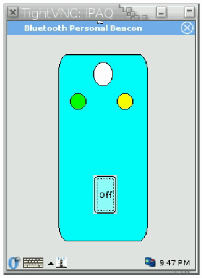
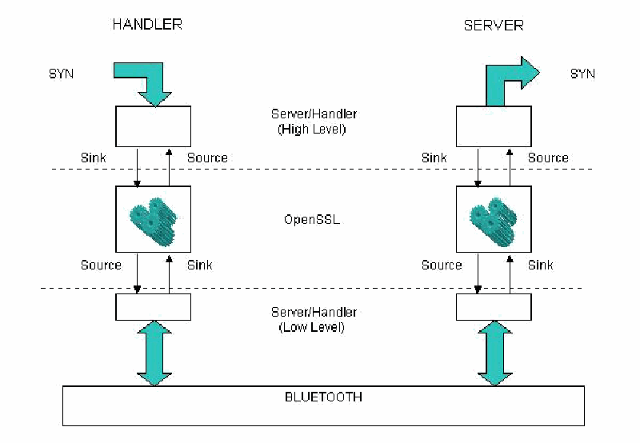

NIST IR 7200 日本語訳
英語タイトル : Proximity Beacons and Mobile Device Authentication: an Overview and Implementation日本語タイトル : 近接ビーコンとモバイル機器認証：概要と実装
公開日 : 2005-06-01
原文URL : https://csrc.nist.gov/pubs/ir/7200/final
翻訳編集 : 自動生成（有志による非公式の日本語訳）, 原文取得日 : 2026-10-31, 訳文 : 242 / 251 ブロック
[要約] NIST IR 7200 は、アクセスを許可する条件として無線ビーコンからの信号の存在に依存する、革新的な種類の認証機構について述べた報告書です。適切な利用者認証を可能にすることは、放置された、紛失した、または盗まれたハンドヘルド機器の不正使用に対する第一の防御線であるとされています。このような近接ビーコンは、組織向けにも個人向けにもでき、ハンドヘルド機器が Bluetooth などのパーソナルエリアネットワーク（PAN）通信用の一般的な標準無線インタフェースをサポートしていることだけを必要とします。個人用と組織用の両方の近接ビーコンについて、設計と実装の詳細を示し、マルチモード認証フレームワーク（MAF）にも触れています。
［NIST のロゴ。公的な標章のため、この非公式サイトには掲載していません。原本 PDF を参照してください。］
NISTIR 7200
NISTIR 7200
Proximity Beacons and Mobile Device Authentication: An Overview and Implementation
近接ビーコンとモバイル機器認証: 概要と実装
Wayne Jansen Serban Gavrila Vlad Korolev
Wayne Jansen Serban Gavrila Vlad Korolev
NISTIR 7200
NISTIR 7200
Proximity Beacons and Mobile Handheld Devices: Overview and Implementation
近接ビーコンとモバイルハンドヘルド機器: 概要と実装
Wayne Jansen Serban Gavrila Vlad Korolev
Wayne Jansen Serban Gavrila Vlad Korolev
COMPUTER SECURITY
コンピュータセキュリティ
Computer Security Division Information Technology Laboratory National Institute of Standards and Technology Gaithersburg, MD 20988-8930
Computer Security Division Information Technology Laboratory National Institute of Standards and Technology Gaithersburg, MD 20988-8930
June 2005
2005年6月
U.S. Department of Commerce Carlos M. Gutierrez, Secretary
米国商務省 Carlos M. Gutierrez 長官
Technology Administration Phillip J. Bond, Under Secretary of Commerce for Technology
技術局 Phillip J. Bond、商務次官（技術担当）
National Institute of Standards and Technology Hratch G. Semerjian, Director (Acting)
国立標準技術研究所 Hratch G. Semerjian、NIST 所長代行
Reports on Computer Systems Technology
コンピュータシステム技術に関する報告書
The Information Technology Laboratory (ITL) at the National Institute of Standards and Technology (NIST) promotes the U.S. economy and public welfare by providing technical leadership for the Nation’s measurement and standards infrastructure. ITL develops tests, test methods, reference data, proof of concept implementations, and technical analysis to advance the development and productive use of information technology. ITL’s responsibilities include the development of technical, physical, administrative, and management standards and guidelines for the cost-effective security and privacy of sensitive unclassified information in Federal computer systems. This Interagency Report discusses ITL’s research, guidance, and outreach efforts in computer security, and its collaborative activities with industry, government, and academic organizations.
国立標準技術研究所（NIST）の情報技術研究所（ITL）は、国家の測定・標準インフラに対する技術的なリーダーシップを提供することにより、米国経済と公共の福祉を促進しています。ITL は、情報技術の開発と生産的な利用を推進するため、試験、試験方法、参照データ、概念実証の実装、技術分析を開発しています。ITL の責務には、連邦コンピュータシステムにおける機密扱いでない重要情報のセキュリティとプライバシーを費用対効果高く確保するための、技術的、物理的、管理的、運用管理上の標準およびガイドラインの策定が含まれます。この省庁間報告書は、コンピュータセキュリティに関する ITL の研究、ガイダンス、アウトリーチの取り組みと、産業界、政府、学術機関との共同活動について述べています。
National Institute of Standards and Technology Interagency Report 31 pages (2005)
国立標準技術研究所 省庁間報告書 31ページ（2005年）
Certain commercial entities, equipment, or materials may be identified in this document in order to describe an experimental procedure or concept adequately. Such identification is not intended to imply recommendation or endorsement by the National Institute of Standards and Technology, nor is it intended to imply that the entities, materials, or equipment are necessarily the best available for the purpose.
本文書では、実験手順や概念を適切に説明するために、特定の商業的主体、機器、または資材を明示する場合があります。そのような明示は、国立標準技術研究所による推奨や支持を意味するものではなく、それらの主体、資材、機器がその目的に利用可能な最良のものであるとは限らないことを意味するものでもありません。
Abstract
概要
The use of mobile handheld devices within the workplace is expanding rapidly. These devices are no longer viewed as coveted gadgets for early technology adopters, but have instead become indispensable tools that offer competitive business advantages for the mobile workforce. While these devices provide productivity benefits, they also pose new risks to an organization’s security by the information they contain or can access remotely.
職場でのモバイルハンドヘルド機器の利用は急速に拡大しています。これらの機器はもはや、新技術をいち早く取り入れる人々が欲しがる小物とは見なされておらず、モバイルワーカーにとって競争上の事業優位をもたらす不可欠な道具になっています。これらの機器は生産性の向上をもたらす一方で、機器が保持する、または遠隔からアクセスできる情報により、組織のセキュリティに新たなリスクをもたらします。
Enabling adequate user authentication is the first line of defense against unauthorized use of an unattended, lost, or stolen handheld device. This report describes an innovative type of authentication mechanism that relies on the presence of a signal from a wireless beacon for access to be granted. Such proximity beacons can be either organizational or personal oriented, and require only that handheld devices support a common standard wireless interface for Personal Area Network (PAN) communications, such as Bluetooth. Details of the design and implementation for both personal and organizational proximity beacons are provided.
適切な利用者認証を可能にすることは、放置された、紛失した、または盗まれたハンドヘルド機器の不正使用に対する第一の防御線です。本報告書は、アクセスを許可する条件として無線ビーコンからの信号の存在に依存する、革新的な種類の認証機構について述べます。このような近接ビーコンは、組織向けにも個人向けにもでき、ハンドヘルド機器が Bluetooth などのパーソナルエリアネットワーク（PAN）通信用の一般的な標準無線インタフェースをサポートしていることだけを必要とします。個人用と組織用の両方の近接ビーコンについて、設計と実装の詳細を示します。
Table of Contents
目次
Introduction
はじめに
With the trend toward a highly mobile workforce, the use of handheld devices such as Personal Digital Assistants (PDAs) is growing at an ever-increasing rate. These devices are relatively inexpensive productivity tools that are quickly becoming a necessity in government and industry. Most handheld devices can be configured to send and receive electronic mail and browse the Internet using wireless communications. While such devices have their limitations, they are nonetheless extremely useful in managing appointments and contact information, reviewing documents and spreadsheets, corresponding via electronic mail and instant messaging, delivering presentations, and accessing remote corporate data.
モバイルワーカーが大きく増える傾向にあり、携帯情報端末（PDA）などのハンドヘルド機器の利用は、ますます速い勢いで増えています。これらの機器は比較的安価な生産性向上の道具であり、政府と産業界で急速に必需品になりつつあります。ほとんどのハンドヘルド機器は、無線通信を使って電子メールの送受信やインターネットの閲覧ができるよう構成できます。こうした機器には制約があるものの、予定や連絡先の管理、文書や表計算の閲覧、電子メールやインスタントメッセージによるやり取り、プレゼンテーションの実施、遠隔の企業データへのアクセスに極めて有用です。
Manufacturers produce handheld devices using a broad range of hardware and software. Unlike desktops and notebook computers, handheld devices typically support a set of interfaces that are oriented toward user mobility. Handheld devices are characterized by their small physical size, limited storage and processing power, and battery-powered operation. Most Personal Digital Assistant (PDA) devices provide adequate memory (at least 32MB Flash ROM and 64MB RAM) and processing speed (200Mhz or higher) for basic organizational use. Such devices come equipped with a LCD touch screen (one-quarter VGA or higher) and a microphone, soundcard, and speaker, but usually lack a QWERTY keypad. One or more wireless interfaces, such as infrared or radio (e.g., Bluetooth and WiFi) are also built-in for communication over limited distances to other devices and network access points; so too are wired interfaces (e.g., serial and USB) for synchronizing data with a desktop computer. Many high-end PDA devices also support Secure Digital (SD) and Compact Flash (CF) card slots for feature expansion. Over their course of use, such handheld devices can accumulate significant amounts of sensitive corporate information (e.g., medical or law enforcement data) and be configured for access to corporate resources via wireless and wired communications.
製造者は、幅広いハードウェアとソフトウェアを使ってハンドヘルド機器を製造しています。デスクトップやノート型コンピュータと異なり、ハンドヘルド機器は通常、利用者の移動性に向けたインタフェース群をサポートします。ハンドヘルド機器の特徴は、物理的なサイズが小さいこと、記憶容量と処理能力が限られていること、電池で動作することです。ほとんどの携帯情報端末（PDA）機器は、基本的な組織内利用に十分なメモリ（少なくとも 32MB のフラッシュ ROM と 64MB の RAM）と処理速度（200Mhz 以上）を備えています。こうした機器には LCD タッチスクリーン（4分の1 VGA 以上）とマイク、サウンドカード、スピーカーが備わっていますが、通常は QWERTY キーパッドがありません。赤外線や無線（Bluetooth や WiFi など）といった 1 つ以上の無線インタフェースも、ほかの機器やネットワークアクセスポイントとの限られた距離での通信用に内蔵されています。デスクトップコンピュータとデータを同期するための有線インタフェース（シリアルや USB など）も同様です。多くの高性能な PDA 機器は、機能拡張のための Secure Digital（SD）と Compact Flash（CF）のカードスロットにも対応しています。使用するうちに、こうしたハンドヘルド機器には、重要な企業情報（医療データや法執行機関のデータなど）が大量に蓄積される場合があり、無線および有線の通信で企業の資源にアクセスするよう構成される場合があります。
One of the most serious security threats to any computing device is unauthorized use. User authentication is the first line of defense against this threat. Unfortunately, management oversight of user authentication is a persistent problem, particularly with handheld devices, which tend to be at the fringes of an organization’s influence. Other security issues related to authentication that loom over their use include the following items:
どのコンピューティング機器にとっても、最も深刻なセキュリティ脅威の 1 つは不正使用です。利用者認証は、この脅威に対する第一の防御線です。残念ながら、利用者認証に対する管理上の監督は慢性的な問題であり、とりわけ組織の影響が及びにくい周縁部にあることの多いハンドヘルド機器で顕著です。ハンドヘルド機器の利用に付きまとう、認証に関するその他のセキュリティ上の問題には、次のものがあります。
•Because of their small size, handheld devices are easily lost or stolen.
•サイズが小さいため、ハンドヘルド機器は容易に紛失したり盗まれたりします。
•User authentication may be disabled, a common default mode, divulging the contents of the device to anyone who possesses it.
•利用者認証が無効にされている場合があり（よくある初期設定）、機器を手にした誰に対しても機器の内容が漏れてしまいます。
•Even if user authentication is enabled, the authentication mechanism may be weak or easily circumvented.
•利用者認証が有効であっても、認証機構が弱い、または容易に回避される場合があります。
•Once authentication is enabled, changing the authentication information regularly is seldom done.
•いったん認証を有効にすると、認証情報を定期的に変更することはほとんど行われません。
•Limit processing power of the device, may preclude the use of computationally intensive authentication techniques or cryptographic algorithms.
•機器の処理能力が限られているため、計算量の多い認証技術や暗号アルゴリズムを使えない場合があります。
Authentication using passwords is perhaps the best-known example of a proof by knowledge mechanism. Other classes of authentication mechanisms include proof by possession (e.g., smart cards) and proof by property (e.g., fingerprints). Two additional factors that can apply to each class of authentication mechanism are location and time of day. They refer respectively to whether the authentication is being attempted at either an acceptable location or an acceptable time. The mechanisms described in this report involve location as a facet of user authentication.
パスワードによる認証は、おそらく、知識による証明（proof by knowledge）の機構として最もよく知られた例です。認証機構のほかの種類には、所持による証明（スマートカードなど）と、本人の性質による証明（指紋など）があります。認証機構のどの種類にも適用できるさらに 2 つの要素が、場所と時刻です。これらはそれぞれ、認証が許容される場所または許容される時刻で試みられているかどうかを指します。本報告書で述べる機構は、利用者認証の一面として場所を扱います。
Establishing location benefits user authentication in several important ways:
場所を確定することは、利用者認証にいくつかの重要な利点をもたらします。
•If a user attempts to authenticate from an unauthorized location, the authentication mechanism can reject the attempt.
•利用者が許可されていない場所から認証を試みた場合、認証機構はその試みを拒否できます。
•If a user attempts to authenticate from a location outside a defined boundary, the authentication framework can require that additional authentication mechanisms be satisfied before granting access.
•利用者が定義された境界の外の場所から認証を試みた場合、認証フレームワークは、アクセスを許可する前に、追加の認証機構が満たされることを要求できます。
•If a user instantiates a new activity, such as accessing a specialized application, the authentication framework can require that access to the functionality and related data be conducted from with an appropriate location.
•利用者が、特殊なアプリケーションへのアクセスなど、新しい活動を開始した場合、認証フレームワークは、その機能と関連データへのアクセスが適切な場所から行われることを要求できます。
•If a user moves within or outside of a defined boundary, the authentication mechanism can be triggered automatically to grant or deny access.
•利用者が定義された境界の内側または外側へ移動した場合、認証機構が自動的に起動されて、アクセスを許可または拒否できます。
This report provides an overview of two kinds of location-based authentication mechanisms involving proximity beacons that interface and communicate through standard interfaces supported by most handheld devices. The report describes how each kind of beacon is used to authenticate users on handheld devices and provides details of the solutions’ design and implementation.
本報告書は、ほとんどのハンドヘルド機器がサポートする標準インタフェースを通じて接続し通信する、近接ビーコンを使った 2 種類の場所ベースの認証機構の概要を示します。報告書は、各種類のビーコンをハンドヘルド機器の利用者認証にどのように使うかを説明し、両解決策の設計と実装の詳細を示します。
The authentication mechanisms were implemented in C and C++ on an iPAQ Personal Digital Assistant (PDA), running the Familiar distribution of the Linux operating system from handhelds.org and the Open Palmtop Integrated Environment (OPIE). OPIE is an open-source implementation of the Qtopia graphical environment of TrollTech. OPIE and Qtopia are both built with Qt/Embedded, a C++ toolkit for graphical user interface (GUI) and application development for embedded devices, which includes its own windowing system. The Familiar distribution was modified with MAF, a framework for multi-mode authentication [Jan03a]. The framework includes a policy enforcement engine, which governs the behavior of both code modules and users [Jan03b], and the facility to add new authentication mechanism modules and have them execute in a prescribed order.
認証機構は、handhelds.org の Linux オペレーティングシステムの Familiar ディストリビューションと Open Palmtop Integrated Environment（OPIE）を実行する iPAQ 携帯情報端末（PDA）上で、C と C++ で実装されました。OPIE は、TrollTech の Qtopia グラフィカル環境のオープンソース実装です。OPIE と Qtopia はいずれも、組込み機器向けのグラフィカルユーザインタフェース（GUI）とアプリケーション開発用の C++ ツールキットで、独自のウィンドウシステムを含む Qt/Embedded で構築されています。Familiar ディストリビューションは、マルチモード認証のフレームワークである MAF で修正されました [Jan03a]。このフレームワークは、コードモジュールと利用者の双方の振る舞いを統制するポリシー強制エンジン [Jan03b] と、新しい認証機構モジュールを追加し、それらを所定の順序で実行させる機能を含みます。
Background
背景
Physical location sensors come in many shapes and sizes and use many different techniques for determining position. Physical sensor systems typically have two kinds of components: appliances and infrastructure. An appliance is the equipment associated with an entity (e.g., a Global Positioning System (GPS) receiver or mobile phone), while the infrastructure is the set collection of sensor equipment, usually fixed, which needs to be in place for the appliances to function (e.g., GPS satellites or mobile phone towers) [Ind03]. A communication medium through which the devices and infrastructure communicate is also required. Other classes of location systems, where the user carries no appliance and the solution relies entirely on infrastructure components (e.g., infrared cameras or floor sensors), are outside the scope of this discussion.
物理的な位置センサーにはさまざまな形状と大きさがあり、位置を決定するために多くの異なる技術を使います。物理センサーシステムには通常、アプライアンスとインフラという 2 種類の構成要素があります。アプライアンスは、エンティティに関連付けられた機器（全地球測位システム（GPS）受信機や携帯電話など）であり、インフラは、アプライアンスが機能するために設置されている必要のある、通常は固定されたセンサー機器の集合（GPS 衛星や携帯電話の基地局など）です [Ind03]。機器とインフラが通信するための通信媒体も必要です。利用者がアプライアンスを携帯せず、解決策がインフラの構成要素にまったく依存する、位置システムのほかの種類（赤外線カメラや床センサーなど）は、この議論の範囲外です。
Physical location sensors can provide either position or proximity information. Position sensors attempt to provide the coordinates of an entity (or more usually, an appliance) relative to some coordinate system. The coordinate system may be fixed and global (e.g., the latitude, longitude and altitude reported by a GPS receiver), or mobile and local (e.g., “3 meters to my right”). Proximity sensors are less exact (e.g., within close or distant range of a sensor) [Ind03]. While latitude-longitude-altitude coordinates are suitable for describing points on the globe, they do not work as well for describing points indoors. Proximity sensors with overlapping detection regions can form the basis of position sensors. Position information can be determined via triangulation or trilateration. Both techniques use the geometry of triangles to calculate the relative position between points. Triangulation uses both distance and angle measurements, whereas trilateration uses only distance measurements.
物理的な位置センサーは、位置情報または近接情報のいずれかを提供できます。位置センサーは、何らかの座標系に対するエンティティ（より一般的にはアプライアンス）の座標を提供しようとします。座標系は、固定されたグローバルなもの（GPS 受信機が報告する緯度、経度、高度など）の場合も、移動するローカルなもの（「私の右 3 メートル」など）の場合もあります。近接センサーは、それほど正確ではありません（センサーの近い範囲か遠い範囲か、など）[Ind03]。緯度・経度・高度の座標は地球上の点を記述するには適していますが、屋内の点を記述するにはそれほどうまく機能しません。検出領域が重なる近接センサーは、位置センサーの基礎となり得ます。位置情報は、三角測量または三辺測量によって決定できます。どちらの手法も、三角形の幾何を使って点間の相対位置を計算します。三角測量は距離と角度の両方の測定値を使うのに対し、三辺測量は距離の測定値だけを使います。
Different sensors have different resolutions and associated errors, ranging from centimeters (e.g., the ultrasound positioning of the Active Bat system) to tens of meters (e.g. raw GPS) [Hig01, Ind03, Haz04]. Different sensors also operate over different scales of distance, ranging from zero (e.g. contact sensors and card readers) to global (e.g. GPS). Sensors may also be limited to indoor or outdoor use. For example, the GPS, perhaps the best-known technology for establishing location, requires a clear view of at least three of the two-dozen satellites orbiting above the Earth to determine position [Hig01]. Because satellite reception in buildings is poor to nonexistent, GPS is ineffective indoors [War97].
センサーによって分解能とそれに伴う誤差は異なり、センチメートル（Active Bat システムの超音波測位など）から数十メートル（未加工の GPS など）に及びます [Hig01, Ind03, Haz04]。センサーによって動作する距離の尺度も異なり、ゼロ（接触センサーやカードリーダーなど）から全地球規模（GPS など）に及びます。センサーが屋内または屋外での使用に限定される場合もあります。たとえば GPS は、位置を確定するために、地球の上空を周回する 2 ダースの衛星のうち少なくとも 3 つを遮られずに見通せることを必要とし、おそらく場所を確定するための技術として最もよく知られています [Hig01]。建物内では衛星の受信が悪く、まったく受信できないこともあるため、GPS は屋内では有効ではありません [War97]。
Thus, location can be treated in two ways: by position, where geographical or other physical coordinates of a unit are resolved to some degree of accuracy, or by proximity, where a unit’s presence, relative position, or absence within an area is determined. Determining positional coordinates typically requires an extensive sensor infrastructure able to cooperate with an appliance to estimate position algorithmically through monitored signals, using triangulation or some other technique. Determining proximity, while less precise, typically requires a less extensive infrastructure.
このように、場所は 2 通りの方法で扱えます。1 つは位置による方法で、ユニットの地理的またはその他の物理的な座標が、ある程度の精度まで解決されます。もう 1 つは近接による方法で、エリア内でのユニットの存在、相対位置、または不在が判定されます。位置座標の決定には通常、アプライアンスと協調し、三角測量などの技術を用いて監視した信号から位置をアルゴリズム的に推定できる、大規模なセンサーインフラが必要です。近接の決定は、精度は劣りますが、通常は大規模でないインフラで足ります。
Two classes of solution prevail for resolving location. The first is where location information is initially known only by the appliance, but not the infrastructure. The second is the reverse by which location information is initially known only by the infrastructure and then released to the appliance [Gru03].
場所を解決する解決策には、2 つの種類が主流です。1 つ目は、場所の情報が最初はアプライアンスだけが知っていて、インフラは知らない場合です。2 つ目はその逆で、場所の情報が最初はインフラだけが知っていて、その後アプライアンスに公開される場合です [Gru03]。
The first class of solutions makes the appliance more independent of infrastructure components and services. It also has privacy benefits, since the approach can allow the user of the appliance to decide when or whether to release the location information system wide. However, it requires the appliance to be not only compatible with the infrastructure beacons, but also powerful enough to make the needed computations and access control decisions. The second class of solutions is less demanding on the appliance, since the device does not have to be powerful enough to perform such computations and access control decisions (e.g., RFID or the Active Bat [War97]), relying instead on infrastructure components and services. For example, pervasive systems fall into this category, since they are by their very nature context-aware, one type of context information being location information gathered from a variety of location sources and sensors (e.g., the location of users, devices and services) [Gru03].
1 つ目の種類の解決策は、アプライアンスをインフラの構成要素やサービスからより独立させます。この方法では、アプライアンスの利用者が、場所の情報をシステム全体に公開する時期や公開するかどうかを決められるため、プライバシー上の利点もあります。しかし、アプライアンスは、インフラのビーコンと互換性があるだけでなく、必要な計算とアクセス制御の判断を行えるだけの性能も必要です。2 つ目の種類の解決策は、機器がそのような計算やアクセス制御の判断を行えるほどの性能を必要とせず（RFID や Active Bat [War97] など）、代わりにインフラの構成要素とサービスに依存するため、アプライアンスへの要求が低くなります。たとえば、ユビキタスシステムはこの分類に入ります。それらは本質的にコンテキスト認識であり、コンテキスト情報の 1 つの種類が、さまざまな場所の情報源とセンサー（利用者、機器、サービスの場所など）から収集される場所の情報だからです [Gru03]。
This report describes two kinds of authentication mechanisms that rely on proximity, which is determined using a small number of proximity beacons for the infrastructure. The authentication mechanisms are distinguished as either organizational or personal oriented, and in both cases require only that participating handheld devices, which function as the appliances, support a common standard wireless interface for Personal Area Network (PAN) communications, such as Bluetooth. The mechanisms are designed to establish the relative location of a mobile device with respect to a trusted beacon that, once discovered, serves as a security token, which is contacted periodically to confirm its presence and to verify its authenticity.
本報告書は、近接に依存する 2 種類の認証機構について述べます。近接は、インフラとして少数の近接ビーコンを使って判定されます。認証機構は、組織向けか個人向けかで区別され、どちらの場合も、アプライアンスとして機能する参加ハンドヘルド機器が、Bluetooth などのパーソナルエリアネットワーク（PAN）通信用の一般的な標準無線インタフェースをサポートしていることだけを必要とします。これらの機構は、信頼できるビーコンに対するモバイル機器の相対的な場所を確立するよう設計されています。そのビーコンは、いったん発見されるとセキュリティトークンとして機能し、その存在を確認し真正性を検証するために定期的に接続されます。
The Multi-mode Authentication Framework (MAF)
マルチモード認証フレームワーク（MAF）
MAF was developed previously in a related effort to provide a structured environment for the protection and execution of one or more authentication mechanisms operating on Linux handheld devices [Jan03a]. The authentication mechanisms described in this report were implemented specifically for this framework. Each authentication mechanism consists of two parts: an authentication handler and a user interface (UI). Figure 1 illustrates these elements within a Linux operating system environment, enhanced with kernel support for MAF.
MAF は、Linux ハンドヘルド機器で動作する 1 つ以上の認証機構の保護と実行のための構造化された環境を提供する、関連する取り組みのなかで以前に開発されました [Jan03a]。本報告書で述べる認証機構は、このフレームワーク向けに特別に実装されました。各認証機構は、認証ハンドラとユーザインタフェース（UI）という 2 つの部分で構成されます。図 1 は、MAF に対するカーネルサポートで強化された Linux オペレーティングシステム環境における、これらの要素を示します。
![Block diagram of the Multi-mode Authentication Framework. In user space, the Opie environment contains a Plug-in with "Handler A UI" and "Handler B UI" components and a "Command Router". The plug-in connects through a "Socket" to "Handler A" and "Handler B", which access "File System/ Peripherals" (a disk, a token, a card and other devices). Below the line separating "User Space" from "Kernel Space", the "Kernel" contains "Policy Enforcement" and "Multi-Mode Authentication", which communicate with the handlers.](assets/ir-7200/p0010-figure-01.png)
多モード認証フレームワークの構成図です。ユーザー空間では、Opie 環境の中のプラグイン（Plug-in）に「Handler A UI」「Handler B UI」と「Command Router」があり、ソケット（Socket）を通じて「Handler A」「Handler B」とつながります。ハンドラーはファイルシステムと周辺機器（File System/ Peripherals：ディスク、トークン、カードなど）にアクセスします。ユーザー空間（User Space）とカーネル空間（Kernel Space）の境界の下にあるカーネル（Kernel）には「Policy Enforcement」と「Multi-Mode Authentication」があり、ハンドラーと通信します。
Figure 1: Multi-mode Authentication Framework
図 1: マルチモード認証フレームワーク
Authentication handlers embody the procedure that performs the actual authentication. They communicate with the kernel, listening for when to initiate authentication and reporting whether authentication was successful. They communicate with the user interface components to bring up specific screens, accept input, display messages, etc. on the device. Handlers also communicate with any peripheral hardware devices needed for authentication, such as a security token, and access the file system to store and retrieve information as needed. Handlers run in user space as do their respective user interface.
認証ハンドラは、実際の認証を行う手続きを具現化したものです。ハンドラはカーネルと通信して、認証を開始するタイミングを待ち受け、認証が成功したかどうかを報告します。ユーザインタフェースの構成要素と通信して、機器上で特定の画面を表示させ、入力を受け付け、メッセージを表示するなどします。ハンドラはまた、セキュリティトークンなど、認証に必要な周辺ハードウェア機器とも通信し、必要に応じて情報を保存および取得するためにファイルシステムにアクセスします。ハンドラは、それぞれのユーザインタフェースと同様に、ユーザ空間で動作します。
The user interface for an authentication mechanism is implemented as a set of components of a plug-in module for the OPIE desktop environment. Their function is to perform all necessary interactions with the user. For example, with beacon applications they can be used to notify the user of errors that occur. The plug-in module supports a socket interface to receive commands from an authentication handler that runs as a separate process, and to route the commands to the correct user interface component. Similarly, reverse routing is also supported for responses from user interface components to an authentication handler.
認証機構のユーザインタフェースは、OPIE デスクトップ環境用のプラグインモジュールの構成要素群として実装されます。その機能は、利用者との必要なやり取りをすべて行うことです。たとえばビーコンのアプリケーションでは、発生したエラーを利用者に通知するのに使えます。プラグインモジュールは、別のプロセスとして動作する認証ハンドラからコマンドを受け取り、そのコマンドを正しいユーザインタフェース構成要素へ送るためのソケットインタフェースをサポートします。同様に、ユーザインタフェース構成要素から認証ハンドラへの応答についても、逆方向の経路制御がサポートされます。
The kernel has two key modifications to support the framework: the multi-mode authentication functionality and the policy enforcement functionality.
カーネルには、フレームワークをサポートするための 2 つの主要な修正があります。マルチモード認証機能と、ポリシー強制機能です。
•Policy enforcement’s main responsibility is to impose different sets of policy rules on the device, as signaled by multi-mode authentication, for one or more defined policy contexts referred to as policy levels. For example, it can block hardware buttons and certain I/O ports on the device until the user is authenticated at the lowest policy level, policy level 1. Policy enforcement is also used to protect authentication information files, the user interface and handler components, and policy enforcement information against improper access. Moreover, it has the means to register and start up authorized handlers, if they are not running, or restart them, if they terminate for some reason.
•ポリシー強制の主な責務は、マルチモード認証からの合図に従って、ポリシーレベルと呼ばれる 1 つ以上の定義済みポリシーコンテキストに対し、機器にさまざまなポリシー規則の集合を課すことです。たとえば、最も低いポリシーレベルであるポリシーレベル 1 で利用者が認証されるまで、機器のハードウェアボタンや特定の I/O ポートを遮断できます。ポリシー強制は、認証情報ファイル、ユーザインタフェースとハンドラの構成要素、およびポリシー強制の情報を、不適切なアクセスから保護するためにも使われます。さらに、認可されたハンドラが動作していなければ登録して起動し、何らかの理由で終了した場合は再起動する手段も備えています。
•The main responsibility of the multi-mode authentication functionality within the kernel is to govern the authentication steps as they relate to the various policy levels that are configured. Communication between the kernel and an authentication handler is done via the /proc file system. The multi-mode authentication functionality maintains complete knowledge about the mappings between authentication mechanisms and policy levels, simplifying the development of the authentication handlers. One of its key functions is to initiate user authentication when the device is powered on. It also controls the order and frequency in which the handlers are awakened from suspended state and begin execution, and ensures that messages from only legitimate handlers are accepted and processed.
•カーネル内のマルチモード認証機能の主な責務は、構成された各種のポリシーレベルに関連する認証ステップを統制することです。カーネルと認証ハンドラの間の通信は、/proc ファイルシステムを介して行われます。マルチモード認証機能は、認証機構とポリシーレベルの対応付けに関する情報をすべて保持しており、認証ハンドラの開発を簡素化します。その主な機能の 1 つは、機器の電源投入時に利用者認証を開始することです。また、ハンドラが一時停止状態から起こされて実行を開始する順序と頻度を制御し、正当なハンドラからのメッセージだけが受け付けられて処理されるようにします。
Together, the kernel policy enforcement and multi-mode authentication extensions are essential for securing authentication applications.
カーネルのポリシー強制とマルチモード認証の拡張は、あわせて、認証アプリケーションを保護するうえで不可欠です。
To create an additional authentication mechanism, a developer needs to create a new authentication handler along with any required user interface objects and the policy rules to protect the mechanism. Policy rules include limiting access to the storage objects used, the user interface objects within the plug-in module, and the authentication handler itself. They also can limit communications to peripheral devices and among the handler, the user interface, and kernel. Note that writing an authentication mechanism that neither interacts with the user nor requires a user interface component is possible. For example, the mechanism could be based on a sensor that is continually monitored and whose input automatically triggers an authenticated or non-authenticated transition.
認証機構を追加で作成するには、開発者は、新しい認証ハンドラを、必要なユーザインタフェースオブジェクト、および機構を保護するためのポリシー規則とともに作成する必要があります。ポリシー規則には、使用する記憶オブジェクト、プラグインモジュール内のユーザインタフェースオブジェクト、認証ハンドラ自体へのアクセスの制限が含まれます。また、周辺機器との通信と、ハンドラ、ユーザインタフェース、カーネル間の通信を制限することもできます。利用者とやり取りせず、ユーザインタフェース構成要素も必要としない認証機構を書くことも可能であることに注意してください。たとえば、継続的に監視されるセンサーに基づき、その入力が、認証済みへの遷移または未認証への遷移を自動的に引き起こす機構が考えられます。
Personal Beacon Authentication
個人ビーコン認証
The personal beacon authentication mechanism relies on a security token in possession of the user to satisfy authentication. A PDA is either in or out of the proximity of the beacon as determined by the footprint of the communications signal. The mechanism periodically checks on connectivity with the beacon and reports successful authentication if present and able to be verified; otherwise, it reports failure. Conceptually, the mechanism operates somewhat like a garage door opener that keeps open the door as long as the opener is on and its signal is received. Roam too far from the door with the opener or turn it off and the door closes automatically.
個人ビーコン認証機構は、認証を満たすために、利用者が所持するセキュリティトークンに依存します。PDA は、通信信号のフットプリントによって決まる、ビーコンの近接範囲の内か外のどちらかにあります。機構は、ビーコンとの接続性を定期的に確認し、ビーコンが存在し検証できれば認証の成功を報告し、そうでなければ失敗を報告します。概念的には、この機構はガレージドアのオープナーにいくらか似た動作をします。オープナーがオンで、その信号が受信されている間は、ドアを開けたままにします。オープナーを持ってドアから離れすぎるか、オープナーをオフにすると、ドアは自動的に閉まります。
A personal beacon supports a single PDA to which it is uniquely enrolled. A PDA and personal beacon communicate using Personal Area Network (PAN) communications. Two variants of the personal beacon were developed: one using near-field magnetic communications, the other using Bluetooth radio communications. The solution could be readily adapted for other types of wireless PAN communications technologies.
個人ビーコンは、固有に登録された 1 台の PDA をサポートします。PDA と個人ビーコンは、パーソナルエリアネットワーク（PAN）通信を使って通信します。個人ビーコンは 2 種類の変種が開発されました。1 つは近距離磁界通信を使うもの、もう 1 つは Bluetooth 無線通信を使うものです。この解決策は、ほかの種類の無線 PAN 通信技術にも容易に適合させられます。
Bluetooth is a short-range wireless communications protocol for mobile devices, such as PDAs, cell phones, and headsets, which operates in the globally available 2.4GHz frequency band. Many models of mobile devices are often manufactured with built-in Bluetooth radios, which allow short-range communication and have low power consumption compared to other wireless technologies. Two PDAs with built-in Bluetooth radios were used for the Bluetooth prototype implementation: one as the beacon and the other as the mobile device. The PDA simulating the personal beacon token displays a fully functional virtual token via the touch screen.
Bluetooth は、PDA、携帯電話、ヘッドセットなどのモバイル機器向けの近距離無線通信プロトコルで、世界中で利用可能な 2.4GHz の周波数帯で動作します。モバイル機器の多くの機種は、Bluetooth 無線を内蔵して製造されており、近距離通信が可能で、ほかの無線技術と比べて消費電力が小さいです。Bluetooth の試作実装では、Bluetooth 無線を内蔵した 2 台の PDA を使いました。1 台はビーコンとして、もう 1 台はモバイル機器として使用しました。個人ビーコントークンを模擬する PDA は、タッチスクリーンに完全に機能する仮想トークンを表示します。
Similarly, for the near-field magnetic communications prototype implementation, a pair of data evaluation boards produced by Aura Communications was used by the two PDAs to communicate.1 The boards create a 1.25-meter communication bubble that enables private communications over a channel bit rate of 204.8 kbps and fully reusable frequencies only a few meters away. The time-division-duplexed (TDD) digital communication system uses magnetic induction technology, operating in the ISM band at 13.556 MHz, and requires very little power, making it suitable for use by handheld devices in short-range wireless applications.
同様に、近距離磁界通信の試作実装では、2 台の PDA が通信するために、Aura Communications 製のデータ評価ボード 1 組を使いました。1 このボードは、1.25 メートルの通信バブルを作り、チャネルのビットレート 204.8 kbps での秘匿通信と、わずか数メートル先で完全に再利用可能な周波数を可能にします。時分割複信（TDD）方式のデジタル通信システムは、磁気誘導技術を使い、ISM 帯の 13.556 MHz で動作し、必要な電力が非常に小さいため、近距離無線アプリケーションでのハンドヘルド機器による使用に適しています。
Operation
動作
The personal beacon mechanism was designed for use with organizational handheld devices. Therefore, the design incorporates a public key infrastructure (PKI) and the use of X.509 certificates. It is also easily amenable to work solely with public key pairs generated on the token, if a PKI is unavailable for this application.
個人ビーコン機構は、組織のハンドヘルド機器での使用向けに設計されました。そのため、設計には公開鍵基盤（PKI）と X.509 証明書の使用が組み込まれています。このアプリケーションで PKI が利用できない場合は、トークン上で生成した公開鍵ペアだけで動作するようにすることも容易です。
In the operation of the personal beacon, three phases are distinguished.
個人ビーコンの動作では、3 つのフェーズが区別されます。
•The beacon setup phase – During this phase, the administrator generates a pair of private/public Rivest-Shamir-Adelman (RSA) keys, obtains a user certificate for the beacon, and stores the certificate and the private RSA key on the beacon. The administrator also stores the root certificate (chain) of the Certificate Authority (CA) that issued the beacon certificate onto the client PDA. In the case of Bluetooth personal beacons, the PDA and personal beacon can be paired to establish a long-term trusted association between the two. A special class identifier is used to distinguish beacons from other Bluetooth devices and simplify the pairing operation to the preferred beacon assigned to the user.
•ビーコンのセットアップフェーズ – このフェーズでは、管理者が Rivest-Shamir-Adleman（RSA）の秘密鍵と公開鍵のペアを生成し、ビーコン用の利用者証明書を取得して、その証明書と RSA 秘密鍵をビーコンに保存します。管理者はまた、ビーコン証明書を発行した認証局（CA）のルート証明書（チェーン）を、クライアントの PDA に保存します。Bluetooth の個人ビーコンの場合、PDA と個人ビーコンをペアリングして、両者の間に長期的な信頼関係を確立できます。ビーコンをほかの Bluetooth 機器と区別し、利用者に割り当てられた優先ビーコンへのペアリング操作を簡素化するために、特別なクラス識別子を使います。
•The beacon enrollment phase – During this phase, the (client) PDA tries to authenticate the beacon for the first time. It consists of the following steps:
•ビーコンの登録フェーズ – このフェーズでは、（クライアントの）PDA が初めてビーコンの認証を試みます。次のステップで構成されます。
•The PDA tries to identify and connect to a personal beacon. Note that in the case of the Bluetooth variant, the beacon’s identity is already known and could be used to connect to the beacon directly. However, the PDA inquires for all Bluetooth devices available and tries to connect only to devices of class “Access Point.” If no such device exists, this phase fails. The enrollment phase also fails if such devices exist, but no connection can be successfully made to any of them.
•PDA は、個人ビーコンを識別して接続しようとします。Bluetooth の変種の場合、ビーコンの識別情報はすでに分かっており、それを使ってビーコンに直接接続することもできることに注意してください。しかし PDA は、利用可能なすべての Bluetooth 機器を問い合わせ、クラス「Access Point」の機器にだけ接続しようとします。そのような機器が存在しなければ、このフェーズは失敗します。そのような機器が存在しても、そのいずれにも接続に成功しなかった場合も、登録フェーズは失敗します。
•The PDA starts the high-level protocol with the connected device, whereby it requests and receives the user certificate. If the certificate transfer fails, or the certificate does not verify, the PDA closes the connection and restarts the previous step with another device as the prospective token.
•PDA は、接続した機器と上位レベルのプロトコルを開始し、利用者証明書を要求して受け取ります。証明書の転送が失敗するか、証明書の検証に失敗すると、PDA は接続を閉じ、トークン候補として別の機器を使って前のステップを再開します。
•The PDA tries to authenticate the prospective token through a challenge-response protocol, based on the certificate information. If the authentication exchange fails, the PDA retries the above steps with another device. If the authentication succeeds, the PDA concludes that the prospective token is the intended personal beacon, saves the certificate (i.e., as a flag attesting that enrollment completed successfully) and the communications address of the token (e.g., a MAC Address for Bluetooth) for subsequent use in the authentication phase, and closes the connection.
•PDA は、証明書情報に基づくチャレンジレスポンスプロトコルを通じて、トークン候補の認証を試みます。認証のやり取りが失敗すると、PDA は別の機器で上記のステップを再試行します。認証が成功すると、PDA は、そのトークン候補が意図した個人ビーコンであると結論づけ、証明書（すなわち、登録が正常に完了したことを証明するフラグとして）とトークンの通信アドレス（Bluetooth の MAC アドレスなど）を、認証フェーズでの以後の使用のために保存し、接続を閉じます。
•The authentication phase – During this phase, the (client) PDA initiates a challenge-response exchange with the beacon and checks that its certificate remains in effect. The authentication succeeds if and only if the verification is successful. This phase takes place periodically to ensure that the beacon is present and enabled.
•認証フェーズ – このフェーズでは、（クライアントの）PDA がビーコンとチャレンジレスポンスのやり取りを開始し、その証明書が有効なままであることを確認します。検証が成功した場合に限り、認証は成功します。このフェーズは、ビーコンが存在し有効であることを確認するために、定期的に行われます。
Challenge-Response Protocol
チャレンジレスポンスプロトコル
The underlying mechanism used to authenticate users via a personal beacon relies on a challenge-response protocol compliant with FIPS 196 between the device and the beacon. The PDA challenges the beacon for an appropriate and correct response that can be used to verify that the token is the one originally enrolled by the device owner. The PDA relies on credential information, obtained earlier from the beacon when the PDA owner initially enrolled the beacon with the device.
個人ビーコンによる利用者認証に使われる基盤の機構は、機器とビーコンの間の FIPS 196 に準拠したチャレンジレスポンスプロトコルに依存します。PDA はビーコンに、そのトークンが機器の所有者が最初に登録したものであることの検証に使える、適切で正しい応答を求めてチャレンジします。PDA は、PDA の所有者が最初にビーコンを機器に登録した際に、ビーコンから先に取得したクレデンシャル情報に依存します。
Figure 2 illustrates a typical exchange between the PDA and beacon. The upper part of the diagram shows the enrollment information exchange used to register a token (at right) with the PDA (at left), while the remainder shows the exchanges used to verify the claimed identity.
図 2 は、PDA とビーコンの間の典型的なやり取りを示します。図の上部は、トークン（右）を PDA（左）に登録するために使う登録情報のやり取りを示し、残りは、主張された識別情報を検証するために使うやり取りを示します。
![Data-flow diagram of the exchange between the device (left) and the token (right), divided by a dashed line into an enrollment part and a verification part. Enrollment: "Certificate (CA)" on the device and "Certificate (User)" on the token feed "Enroll", which produces "Certificate (User)" on the device. Verification: a "Random Number" feeds "Challenge", which sends "Challenge" to "Respond" on the token; "Respond" also uses the "Base Secret" "Private Key (User)" and a "Random Number" and returns "Response"; "Verify" on the device uses "Public Key (User)" from the enrolled certificate, the challenge and the response.](assets/ir-7200/p0014-figure-01.png)
端末（左）とトークン（右）の間のやり取りを示すデータフロー図。破線で登録と検証に分かれている。登録：端末の「Certificate (CA)」とトークンの「Certificate (User)」が「Enroll」に入力され、端末に「Certificate (User)」が生成される。検証：「Random Number」が「Challenge」に入力され、トークン上の「Respond」に「Challenge」が送られる。「Respond」は「Base Secret」である「Private Key (User)」と「Random Number」も使用して、「Response」を返す。端末上の「Verify」は、登録済み証明書の「Public Key (User)」、チャレンジおよび応答を使用する。
Figure 2: PDA and Beacon Exchange
図 2: PDA とビーコンのやり取り
Before the personal beacon token can be enrolled at the device, it must first be issued to the user. A security administrator populates the token with the user’s credentials and other needed information. Those credentials are issued by a Certification Authority (CA) and validated using the certificate of the CA. Once the credentials are validated, they are retained at the device and used to verify the user’s identity following FIPS 196 procedures.
個人ビーコントークンを機器に登録できるようになる前に、まず利用者に発行しなければなりません。セキュリティ管理者が、利用者のクレデンシャルとその他の必要な情報をトークンに格納します。それらのクレデンシャルは認証局（CA）によって発行され、CA の証明書を使って検証されます。クレデンシャルが検証されると、機器に保持され、FIPS 196 の手続きに従って利用者の識別情報を検証するために使われます。
For verification, the device and the token adhere to the following protocol [FIPS196]:
検証のために、機器とトークンは次のプロトコルに従います [FIPS196]。
•The device, acting as the verifier, generates a random challenge "B" and passes it to the token for signing with the private key associated with the enrolled identity certificate;
•検証者として動作する機器は、ランダムなチャレンジ "B" を生成し、登録済みの識別情報証明書に関連付けられた秘密鍵で署名するために、トークンに渡します。
•The token, acting as the claimant, generates a random value "A", signs A||B with its private key (“||” denotes concatenation), and returns A and the signature to the PDA;
•請求者として動作するトークンは、ランダムな値 "A" を生成し、自身の秘密鍵で A||B に署名し（「||」は連結を表します）、A と署名を PDA に返します。
•The device retrieves the enrolled identity certificate, verifies it, then verifies the token’s signature over A||B using the public key in the certificate;
•機器は、登録済みの識別情報証明書を取り出して検証し、その後、証明書内の公開鍵を使って、A||B に対するトークンの署名を検証します。
•If everything successfully verifies, authentication succeeds; otherwise, the authentication attempt fails.
•すべての検証に成功すれば認証は成功し、そうでなければ認証の試みは失敗します。
The authentication of an entity depends on two things: the verification of the claimant's binding with its key pair, and the verification of the claimant's digital signature on the random number challenge. Using a private key to generate digital signatures for authentication makes it computationally infeasible for an attacker to masquerade as another entity, while using random number challenges prevents an intruder from copying a valid response signed by the claimant and replaying it successfully at a later time. Including a random number of the claimant in the response before signing it precludes the claimant from signing data that is solely defined by the verifier. The security of the FIPS 196 protocol also hinges on the generation of random numbers that have a low probability of being repeated.
エンティティの認証は、2 つのことに依存します。請求者とその鍵ペアとの結び付きの検証と、乱数のチャレンジに対する請求者のデジタル署名の検証です。認証のためのデジタル署名の生成に秘密鍵を使うことで、攻撃者が別のエンティティになりすますことは計算量的に実行不可能になり、乱数のチャレンジを使うことで、侵入者が、請求者が署名した有効な応答をコピーして、後で再生して成功させることを防げます。署名する前に請求者の乱数を応答に含めることで、請求者が、検証者だけが定義したデータに署名することを妨げられます。FIPS 196 プロトコルのセキュリティは、繰り返される確率が低い乱数の生成にも依存します。
Bluetooth Pairing
Bluetooth のペアリング
Bluetooth pairing is basically a process that consists of exchanging passkeys and setting up a trusted connection between the PDA and the personal beacon. The following steps are required to set up Bluetooth pairing between a PDA and the personal beacon:
Bluetooth のペアリングは、基本的に、パスキーを交換し、PDA と個人ビーコンの間に信頼された接続を設定するプロセスです。PDA と個人ビーコンの間の Bluetooth ペアリングを設定するには、次のステップが必要です。
•The PDA searches for Bluetooth enabled beacons in the area. The beacons must be set up to be discoverable when other Bluetooth devices search. During the discovery process, discoverable devices usually broadcast what they are (such as a beacon, a printer, a mobile phone, a handheld, etc.), and their Bluetooth Device Name. Depending on the device, its Device Name may be able to be changed to something more specific. If multiple Bluetooth devices are in range, and they are all discoverable, identification helps to select a specific beacon from other devices.
•PDA は、その地域にある Bluetooth 対応のビーコンを探します。ビーコンは、ほかの Bluetooth 機器が探索するときに発見可能になるように設定しておく必要があります。探索プロセスの間、発見可能な機器は通常、自分が何であるか（ビーコン、プリンタ、携帯電話、ハンドヘルドなど）と、その Bluetooth デバイス名をブロードキャストします。機器によっては、そのデバイス名をより具体的なものに変更できる場合があります。範囲内に複数の Bluetooth 機器があり、それらがすべて発見可能な場合、識別情報は、ほかの機器の中から特定のビーコンを選択する助けになります。
•Once the beacon is enrolled it can toggle off the discoverability setting, since the PDA retains the address of the beacon. When discoverability is off, the beacon does not respond when other devices search for it. Undiscoverable devices can still communicate with other Bluetooth devices, but they must initiate the communications themselves, if not paired with the device.
•ビーコンがいったん登録されると、PDA がビーコンのアドレスを保持しているため、ビーコンは発見可能性の設定をオフに切り替えられます。発見可能性がオフの場合、ビーコンは、ほかの機器が探索したときに応答しません。発見不可能な機器も、ほかの Bluetooth 機器との通信は引き続き可能ですが、その機器とペアリングされていない場合は、通信を自分から開始しなければなりません。
•After selecting the beacon, the PDA prompts for a passkey or PIN, which is shared by both devices to prove that their respective owners agree to be part of the trusted pair. With more advanced devices, such as mobile phones, both participants must agree on a passkey and enter it on each device. With other types of devices, such as hands-free headsets, where no interface exists for changing the passkey on the device, the passkey is fixed. For such devices, their associated documentation provides the default passkey, and how to change it, if possible. Often, the passkey is simply zero.
•ビーコンを選択した後、PDA はパスキーまたは PIN の入力を促します。これは、それぞれの所有者が信頼されたペアの一部になることに同意していることを証明するために、両方の機器が共有するものです。携帯電話のようなより高度な機器では、両方の参加者がパスキーに合意し、それを各機器に入力しなければなりません。ハンズフリーヘッドセットのように、機器上でパスキーを変更するためのインタフェースがない、ほかの種類の機器では、パスキーは固定されています。そのような機器については、関連するドキュメントが、初期設定のパスキーと、可能であればその変更方法を示しています。パスキーが単にゼロであることも少なくありません。
•Once the passkey is entered on the PDA, it is sent over to the beacon for comparison. If the beacon is an advanced device that needs the user to enter the same passkey, it asks for the passkey; otherwise, the beacon uses its standard, fixed passkey. If the beacon's passkey is the same as that entered by the PDA, a trusted pair is formed. Each device automatically accepts communication from the other, bypassing the discovery and authentication process that normally happens during Bluetooth interactions.
•パスキーが PDA に入力されると、比較のためにビーコンへ送られます。ビーコンが、利用者に同じパスキーの入力を求める高度な機器であれば、パスキーを求めます。そうでなければ、ビーコンは標準の固定パスキーを使います。ビーコンのパスキーが PDA に入力されたものと同じであれば、信頼されたペアが形成されます。各機器は、通常 Bluetooth のやり取りの間に行われる探索と認証のプロセスを迂回して、相手からの通信を自動的に受け入れます。
Safeguards
保護策
For user authentication, the fundamental threat is an attacker impersonating a user and gaining control of the device and its contents. Tokens such as the personal beacon should be designed to resist physical tampering and avoid disclosing its base secret, the private key used to sign challenges it receives. Presuming the design and implementation are effective, the following vulnerabilities are the main candidates for exploitation:
利用者認証における根本的な脅威は、攻撃者が利用者になりすまして、機器とその内容の制御を得ることです。個人ビーコンのようなトークンは、物理的な改ざんに耐え、受け取ったチャレンジに署名するために使う基礎となる秘密、すなわち秘密鍵を開示しないよう設計すべきです。設計と実装が有効であると仮定すると、悪用の主な候補となる脆弱性は次のとおりです。
•The authentication mechanism can be bypassed
•認証機構を迂回できる
•Weak authentication algorithms and methods are used
•弱い認証アルゴリズムと方式が使われている
•The implementation of a correct and effective authentication mechanism design is flawed
•正しく効果的な認証機構の設計の実装に欠陥がある
•The confidentiality and integrity of stored authentication information is not preserved
•保存された認証情報の機密性と完全性が保たれていない
The Personal Beacon handler uses the challenge-response mechanism described in FIPS 196 in order to authenticate the personal beacon token. In signing the challenge and verifying the signature, the handler and the token use OpenSSL v0.9.7APIs that comply with the PKCS #1 standard. The private key held in the token should be used exclusively for authentication.
個人ビーコンのハンドラは、個人ビーコントークンを認証するために、FIPS 196 に記載されたチャレンジレスポンスの機構を使います。チャレンジへの署名と署名の検証では、ハンドラとトークンは、PKCS #1 標準に準拠した OpenSSL v0.9.7 の API を使います。トークンに保持される秘密鍵は、認証にのみ使用すべきです。
The Personal Beacon authentication mechanism embodied in the handler relies on MAF, which in turn relies on the security of the underlying operating system implementation. The handler is protected from substitution and overwrite respectively through the multi-mode authentication and policy enforcement functionalities of MAF. Substitution is prevented through an entry in the list of registered handlers (e.g., </usr/bin/handlerPB 2>) identifying its location, while overwrite is prevented through policy rules in the MAF policy file (/etc/MAF/defaultPolicy).
ハンドラに具現化された個人ビーコン認証機構は MAF に依存しており、MAF は基盤となるオペレーティングシステムの実装のセキュリティに依存しています。ハンドラは、MAF のマルチモード認証機能とポリシー強制機能によって、それぞれ、すり替えと上書きから保護されます。すり替えは、ハンドラの場所を示す登録済みハンドラ一覧のエントリ（例: </usr/bin/handlerPB 2>）によって防がれ、上書きは、MAF のポリシーファイル（/etc/MAF/defaultPolicy）内のポリシー規則によって防がれます。
The personal beacon handler uses the following data files stored on the PDA, which must also be protected through policy enforcement functionality of MAF:
個人ビーコンのハンドラは、PDA に保存された次のデータファイルを使います。これらも MAF のポリシー強制機能によって保護しなければなりません。
•/etc/MAF/cacert.pem: contains the X.509 certificate of the root CA that issued the user’s certificate on the token. This file is installed on the device through security administration.
•/etc/MAF/cacert.pem: トークン上の利用者の証明書を発行したルート CA の X.509 証明書を含みます。このファイルは、セキュリティ管理によって機器にインストールされます。
•/root/Settings/PBcert.pem:2 contains the user’s X.509 certificate token. This file is written at token enrollment, and afterwards it is read only when the handler is restarted.
•/root/Settings/PBcert.pem:2 トークン上の利用者の X.509 証明書を含みます。このファイルはトークンの登録時に書き込まれ、その後はハンドラが再起動されるときにだけ読み取られます。
•/root/Settings/PBaddr.txt:3 contains the token’s Bluetooth address. This file is written at token registration, and afterwards it is read only when the handler is restarted.
•/root/Settings/PBaddr.txt:3 トークンの Bluetooth アドレスを含みます。このファイルはトークンの登録時に書き込まれ、その後はハンドラが再起動されるときにだけ読み取られます。
The MAF policy file (/etc/MAF/defaultPolicy) must contain the following policy rules that grant exclusive permission to the handler to read/write these files at any security level and also prevent the handler from being overwritten [Jan03b]:
MAF のポリシーファイル（/etc/MAF/defaultPolicy）には、どのセキュリティレベルでもこれらのファイルを読み書きする排他的な許可をハンドラに与え、ハンドラが上書きされることも防ぐ、次のポリシー規則を含めなければなりません [Jan03b]。
•<file /etc/MAF/cacert.pem /usr/bin/handlerPB 0>
•<file /etc/MAF/cacert.pem /usr/bin/handlerPB 0>
•<file /root/Settings/PBcert.pem /usr/bin/handlerPB 0>
•<file /root/Settings/PBcert.pem /usr/bin/handlerPB 0>
•<file /root/Settings/PBaddr.txt /usr/bin/handlerPB 0>
•<file /root/Settings/PBaddr.txt /usr/bin/handlerPB 0>
Policy rules specifying access to the Bluetooth stack are not yet available.4 If device pairing would be used, then the binary file /etc/bluetooth/link_keys, where the BlueZ Unix Bluetooth stack appends the symmetric key used in pairing, should also be protected by the following rules:
Bluetooth スタックへのアクセスを規定するポリシー規則は、まだ利用できません。4 機器のペアリングを使う場合は、BlueZ の Unix Bluetooth スタックがペアリングで使う共通鍵を追記するバイナリファイル /etc/bluetooth/link_keys も、次の規則で保護すべきです。
•<file /etc/bluetooth/link_keys /usr/bin/handlerPB 0>
•<file /etc/bluetooth/link_keys /usr/bin/handlerPB 0>
•<file /etc/bluetooth/link_keys /usr/sbin/hcid 0>5
•<file /etc/bluetooth/link_keys /usr/sbin/hcid 0>5
Handler Implementation
ハンドラの実装
The Personal Beacon authentication handler operates as a polling handler, periodically checking the status of the token, as well as initiating authentication with it. The following code excerpt shows the main execution loop of the handler.
個人ビーコン認証ハンドラは、ポーリングするハンドラとして動作し、トークンの状態を定期的に確認するとともに、トークンとの認証を開始します。次のコード抜粋は、ハンドラのメイン実行ループを示します。
crtBeaconState = 0;
...
while (1)
{
previousState = crtBeaconState;
kernelResponse = HandlerReady(11);
if (kernelResponse == mmPoll)
{
crtBeaconState = Authenticate(previousState);
if (enrollfailed) continue;
if (crtBeaconState!= previousState)
{
if (!crtBeaconState)
{
TellUI("PB:shw:Authentication failed");
sleep(2);
TellUI("PB:clr:");
TellKernel("AUTH-FAIL");
}
else
{
TellKernel("LEVEL 1");
}
}
}
else // kernelResponse = mmAuthenticate
{
crtBeaconState = Authenticate(previousState);
if (enrollfailed) {
TellKernel("AUTH-OK");
continue;
}
TellKernel(crtBeaconState? "AUTH-OK" : "AUTH-FAIL");
}
}The variable crtBeaconState stores the beacon current state as reported by the Authenticate() function. The state “authenticated” (1) means the beacon is on and the handler has successfully authenticated it. The state “not authenticated” (0) means no beacon is present, or the beacon authentication has failed.
変数 crtBeaconState は、Authenticate() 関数が報告した、ビーコンの現在の状態を保持します。状態「authenticated」（1）は、ビーコンがオンで、ハンドラがそれを認証できたことを意味します。状態「not authenticated」（0）は、ビーコンが存在しないか、ビーコンの認証が失敗したことを意味します。
The variable previousState maintains the beacon state as detected at the previous polling or authentication moment. Comparing the two state variables allows the handler to detect a change in the beacon state from one polling moment to the next.
変数 previousState は、前回のポーリングまたは認証の時点で検出されたビーコンの状態を保持します。2 つの状態変数を比較することで、ハンドラは、あるポーリング時点から次の時点にかけてのビーコンの状態の変化を検出できます。
After saving the previous beacon state in previousState, the handler tells the kernel that it is a polling handler by calling the HandlerReady() function with the polling interval of 11 seconds.6 Both the polling and the authentication procedures are performed by the same function, Authenticate(), whose code is listed below:7
直前のビーコンの状態を previousState に保存した後、ハンドラは、ポーリング間隔 11 秒で HandlerReady() 関数を呼び出して、自身がポーリングするハンドラであることをカーネルに伝えます。6 ポーリングと認証の手続きはどちらも同じ関数 Authenticate() によって行われ、そのコードを以下に示します。7
int Authenticate(int previousState)
{
int res, dev, s;
static int failedattempts = 0;
now = time(NULL);
if (kernelResponse == mmAuthenticate)
{
if (now < lastTry) lastTry = now;
if (now - lastTry < AUTH_TRY)
{
// Too soon to try authenticate again
return 0;
}
}
// If last successful authentication was less than AUTH_CONFIRM
// seconds ago, assume it's still valid.
if ((now - lastAuth) < AUTH_CONFIRM)
{
// Consider authentication still valid
return 1;
}
// If token not registered
if (!TokenRegistered())
{
if (kernelResponse == mmPoll) return 0;
res = RegisterAndAuth();
if (res) lastAuth = now;
return res;
}
lastTry = now;
// Verify certificate if more than CERT_VERIF seconds
// passed since last verification.
if (now - lastVerif > CERT_VERIFY)
{
res = VerifyCert(pcert);
if (res == 0) {
errmsg = "Invalid certificate";
return 0;
}
lastVerif = now;
}
// Connect to the stored token address.
res = TryToConnect(-1, &s);
if (res == 0)
{
if (!previousState) return 0;
if (++failedattempts > maxfailedattempts) return 0;
return 1;
}
// Authenticate.
res = TryToAuth(s);
if (res == 0)
{
if (!previousState) return 0;
if (++failedattempts > maxfailedattempts) return 0;
return 1;
}
failedattempts = 0;
lastAuth = now;
return 1;
}First, this function refuses to perform authentication and returns the state “not authenticated” if the last try was less than AUTH_TRY (about 4 seconds). The reason behind this is the following: In the case of a failed authentication with the handler associated with level 1, the policy level drops to 0, and the kernel tries to raise it to 1, instructing the handler to authenticate the token. If the authentication fails again, this process repeats itself, flooding the token with connection requests. Limiting authentication attempts to only every 4 seconds or so, avoids such flooding.
まず、この関数は、最後の試行から AUTH_TRY（約 4 秒）未満しか経過していない場合、認証の実行を拒否し、状態「not authenticated」を返します。その理由は次のとおりです。レベル 1 に関連付けられたハンドラでの認証が失敗すると、ポリシーレベルが 0 に下がり、カーネルはハンドラにトークンの認証を指示して、ポリシーレベルを 1 に引き上げようとします。認証が再び失敗すると、このプロセスが繰り返され、トークンに接続要求が殺到します。認証の試行を約 4 秒に 1 回に制限することで、このような殺到を避けられます。
The next few lines after that show that Authenticate() considers a successful authentication to be still valid for at least the AUTH_CONFIRM period (about 20 seconds), to avoid costly connections and data transfers.
その後の数行は、高コストな接続とデータ転送を避けるために、Authenticate() が、成功した認証を少なくとも AUTH_CONFIRM の期間（約 20 秒）は有効なままであると見なすことを示しています。
If the personal beacon token is not yet registered, Authenticate() tries to enroll and authenticate the token by calling the function RegisterAndAuth(). If the token is registered, Authenticate() continues by verifying the user certificate (but not too often), in order to detect the eventual expiration of the certificate. No revocation information is available to the handler.
個人ビーコントークンがまだ登録されていなければ、Authenticate() は、RegisterAndAuth() 関数を呼び出して、トークンの登録と認証を試みます。トークンが登録済みであれば、Authenticate() は、証明書の有効期限切れを検出するために、利用者証明書の検証（ただし頻繁には行いません）に進みます。ハンドラは失効情報を利用できません。
Finally, Authenticate() tries to connect to the token, by using its stored Bluetooth address (for the case where the token is already enrolled and its address has been stored in the handler’s file system), then to authenticate. If the authentication is successful, the handler saves the time of this authentication. Otherwise, if the token is currently authenticated (as reflected by the parameter previousState), a limited number of failure attempts are allowed, before declaring the authentication unsuccessful. The maximum number of failed attempts is by default 2, but it can be set to another value in a configuration file, /root/Settings/Pbconf.txt, using the format “key=value”. The same configuration file can be used to specify the polling interval (which by default is 11 seconds), as the following entries illustrate:
最後に、Authenticate() は、保存された Bluetooth アドレス（トークンがすでに登録され、そのアドレスがハンドラのファイルシステムに保存されている場合）を使ってトークンに接続を試み、その後、認証を試みます。認証に成功すると、ハンドラはこの認証の時刻を保存します。成功しなかった場合、トークンが現在認証済みであれば（パラメータ previousState に反映されています）、認証が失敗したと宣言する前に、限られた回数の失敗の試行が許されます。失敗の試行の最大回数は初期設定では 2 ですが、設定ファイル /root/Settings/Pbconf.txt で「key=value」の形式を使って別の値に設定できます。同じ設定ファイルを使って、次のエントリが示すように、ポーリング間隔（初期設定では 11 秒）も指定できます。
•maxFailedAttempts=1
•maxFailedAttempts=1
•pollingInterval=10
•pollingInterval=10
Token Implementation
トークンの実装
The personal beacon operates as a server to the client authentication handler on the PDA. The personal beacon itself is simulated on the display of an iPAQ PDA. Its code executes as an OPIE application whose graphical user interface is shown in Figure 3. The virtual token pictured represents a key fob form factor, containing two LEDs and an on/off switch. The actual token could have formats other than a key fob. A command line C-language version for PDA/laptop/desktop computers is also available.
個人ビーコンは、PDA 上のクライアント認証ハンドラに対するサーバとして動作します。個人ビーコン自体は、iPAQ PDA のディスプレイ上で模擬されます。そのコードは OPIE アプリケーションとして実行され、グラフィカルユーザインタフェースは図 3 に示すとおりです。図に示した仮想トークンはキーホルダー型の形状を表し、2 つの LED とオン/オフのスイッチを備えています。実際のトークンは、キーホルダー型以外の形状でもかまいません。PDA、ラップトップ、デスクトップコンピュータ向けのコマンドライン C 言語版も利用できます。
The beacon has three internal states: “off”, “on and unconnected”, and “on and connected”. The on/off switch is used to power on or off the beacon and transition between the “off” and consolidated “on” states. The state is reflected by the color of the left LED – green means on, yellow means off. Turning the switch on causes the beacon to start listening for connections and the LED at left to change color. Once a connection is established, the right LED blinks whenever an authentication exchange occurs. The switch itself is labeled “On” or “Off” to indicate whether pressing it will cause the beacon to start up or shutdown respectively.
ビーコンには、「off」、「on and unconnected」、「on and connected」という 3 つの内部状態があります。オン/オフのスイッチは、ビーコンの電源をオンまたはオフにし、「off」とまとめた「on」の状態の間を遷移させるために使います。状態は、左の LED の色に反映されます。緑がオン、黄がオフを意味します。スイッチをオンにすると、ビーコンは接続の待ち受けを開始し、左の LED の色が変わります。接続が確立されると、認証のやり取りが行われるたびに右の LED が点滅します。スイッチ自体には、押すとビーコンが起動するのか停止するのかを示すために、それぞれ「On」または「Off」と表示されます。

模擬した個人用ビーコンの画面です。iPAQ の TightVNC の画面に「Bluetooth Personal Beacon」という OPIE アプリケーションが表示されています。キーホルダー形のトークンの上部に白い表示、左に緑の LED、右に黄色の LED があり、「Off」と書かれたオン・オフのボタンがあります。
Figure 3: Simulated Personal Beacon
図 3: 模擬の個人ビーコン
Procedural Steps
手順のステップ
The Personal Beacon starts up by initializing the OpenSSL libraries and reading the user PKI credentials from files in PEM format (the private key is protected with a password, which for now is hard-coded). These files are located in the $HOME/Setting/ directory, and their name is prefixed with PB or NFM (depending on the variant), where $HOME denotes the real user’s home directory.
個人ビーコンは、OpenSSL ライブラリを初期化し、PEM 形式のファイルから利用者の PKI クレデンシャルを読み込んで起動します（秘密鍵はパスワードで保護されており、現時点ではそのパスワードはハードコードされています）。これらのファイルは $HOME/Setting/ ディレクトリにあり、名前には（変種に応じて）PB または NFM が接頭辞として付いています。$HOME は、実際の利用者のホームディレクトリを表します。
In the next step, the Personal Beacon builds and displays its interface according to the beacon’s initial state (off, with both LEDs off and the On/Off button displaying “On”). When the user clicks on the “On” button, the personal beacon creates an L2CAP server socket, enters the “on” state (unconnected), and starts listening for connections from remote devices.8 It repeatedly polls the server socket for connections with a timeout of 0.5 seconds. When it detects a connection request, the beacon accepts the connection, creates a client socket, and enters the “on connected” state.
次のステップで、個人ビーコンは、ビーコンの初期状態（オフで、両方の LED が消灯し、On/Off ボタンに「On」と表示）に従ってインタフェースを構築して表示します。利用者が「On」ボタンをクリックすると、個人ビーコンは L2CAP サーバソケットを作成し、「on」状態（未接続）に入り、リモート機器からの接続の待ち受けを開始します。8 タイムアウト 0.5 秒で、サーバソケットに対する接続を繰り返しポーリングします。接続要求を検出すると、ビーコンは接続を受け入れ、クライアントソケットを作成し、「on connected」状態に入ります。
In this new state, the beacon repeatedly polls the client socket for input requests from the device, and the server socket for new connections. The beacon processes the input received on the client socket with priority. If a new connection request arrives on the server socket, the old connection is closed and a new one is established.9
この新しい状態では、ビーコンは、機器からの入力要求についてクライアントソケットを、新しい接続についてサーバソケットを、繰り返しポーリングします。ビーコンは、クライアントソケットで受け取った入力を優先して処理します。サーバソケットに新しい接続要求が届くと、古い接続は閉じられ、新しい接続が確立されます。9
Input on the client socket is interpreted as a request from the client PDA. The server processes the request and returns the answer on the client socket. The next section describes the high level protocol between the client PDA and the Personal Beacon. The last request from the client PDA in a session should be “bye”; the server will close the connection with the client PDA.
クライアントソケットへの入力は、クライアント PDA からの要求として解釈されます。サーバはその要求を処理し、応答をクライアントソケットで返します。クライアント PDA と個人ビーコンの間の上位レベルのプロトコルは、次の節で説明します。セッションの中でクライアント PDA からの最後の要求は「bye」とすべきです。サーバは、クライアント PDA との接続を閉じます。
When the user clicks on the button labeled “Off”, the server closes any open connection and repaints its GUI so that the LEDs reflect the beacon state.10 Whenever the user suspends the PDA on which the Personal Beacon runs, the following script located in the /etc/suspend-scripts/ directory automatically terminates the server:11
利用者が「Off」と表示されたボタンをクリックすると、サーバは開いている接続をすべて閉じ、LED がビーコンの状態を反映するように GUI を再描画します。10 個人ビーコンが動作している PDA を利用者がサスペンドするたびに、/etc/suspend-scripts/ ディレクトリにある次のスクリプトが、サーバを自動的に終了させます。11
#!/bin/sh
LOGNAME=root
QTDIR=/opt/QtPalmtop
export LOGNAME QTDIR
/opt/QtPalmtop/bin/qcop “QPE/Application/serverPB” “close()”Note that “serverPB” or “serverNFM” should be the name of the application executable. Using the absolute path of qcop can be avoided by adding its location to the PATH variable and exporting PATH in the script.
「serverPB」または「serverNFM」は、アプリケーション実行ファイルの名前とすべきことに注意してください。qcop の場所を PATH 変数に追加し、スクリプト内で PATH をエクスポートすることで、qcop の絶対パスの使用を避けられます。
Personal Beacon Client/Server Protocol
個人ビーコンのクライアント/サーバプロトコル
The high-level protocol used by the authentication handler and the personal beacon server comprises a few commands. Their descriptions and the request to and responses from the server are described below.
認証ハンドラと個人ビーコンのサーバが使う上位レベルのプロトコルは、いくつかのコマンドで構成されます。それらの説明と、サーバへの要求およびサーバからの応答を、以下に示します。
•getCertLength – The command requests the length of the user’s certificate in bytes. The server maintains the certificate in the PEM format. The server returns the certificate length as a decimal value.
•getCertLength – このコマンドは、利用者の証明書の長さをバイト単位で要求します。サーバは証明書を PEM 形式で保持します。サーバは証明書の長さを 10 進数の値で返します。
•getCertData|offset|length – The command asks for a chunk of the certificate, starting at the indicated offset and for length bytes long. The offset and length are expressed in decimal. The server should return a string of length bytes.12
•getCertData|offset|length – このコマンドは、指定されたオフセットから始まり length バイト長の、証明書の一部を要求します。オフセットと length は 10 進数で表されます。サーバは、length バイトの文字列を返すべきです。12
•signChallenge|challenge – The command asks the server to sign a challenge, which is a string (called B) of 16 bytes randomly generated by the client. When issuing the command, the client must translate each byte of the challenge into two characters representing its hexadecimal digits, resulting in a 32-byte string for the challenge. The server returns the results of the signing operation, which is a 289-character string obtained as follows:13
•signChallenge|challenge – このコマンドは、チャレンジへの署名をサーバに求めます。チャレンジは、クライアントがランダムに生成した 16 バイトの文字列（B と呼びます）です。コマンドを発行する際に、クライアントは、チャレンジの各バイトを 16 進数の桁を表す 2 文字に変換しなければならず、その結果、チャレンジは 32 バイトの文字列になります。サーバは署名操作の結果を返し、それは次のようにして得られる 289 文字の文字列です。13
•The server generates a random string A of 16 bytes and translates each byte into two characters representing its hexadecimal digits.
•サーバは、16 バイトのランダムな文字列 A を生成し、各バイトを 16 進数の桁を表す 2 文字に変換します。
•The server signs (A || B) using the user’s private RSA key, and translates each byte of the 128-bye signature into two characters representing its hexadecimal digits.
•サーバは、利用者の RSA 秘密鍵を使って（A || B）に署名し、128 バイトの署名の各バイトを 16 進数の桁を表す 2 文字に変換します。
•The server concatenates the 32-byte representation of A, the character “|”, and the 256-byte representation of the signature. This is the result of the signing operation, and it has 32 + 1 + 256 = 289 characters.
•サーバは、A の 32 バイトの表現、文字「|」、署名の 256 バイトの表現を連結します。これが署名操作の結果であり、32 + 1 + 256 = 289 文字になります。
•bye – The command requests the server to disconnect from the remote device by closing the client socket, resulting in the beacon state maintained at the client to become “on unconnected”.14 The server returns the string BYE.
•bye – このコマンドは、サーバに、クライアントソケットを閉じてリモート機器から切断するよう要求し、その結果、クライアントで保持されるビーコンの状態が「on unconnected」になります。14 サーバは文字列 BYE を返します。
The following is an example of the client/server dialog conforming to this protocol, as seen from the server side:
次に、このプロトコルに従ったクライアント/サーバ間の対話の例を、サーバ側から見たものとして示します。
getSignLength - The command asks the server for the length in bytes of the result of the signing operation. It should return 289 in decimal (see the command signChallenge).
getSignData|offset|length - The command returns a chunk of the signChallenge result, of specified length and starting at the specified offset.
getSignLength - このコマンドは、署名操作の結果の長さをバイト単位でサーバに尋ねます。10 進数で 289 を返すべきです（コマンド signChallenge を参照）。
getSignData|offset|length - このコマンドは、signChallenge の結果のうち、指定された長さで、指定されたオフセットから始まる一部を返します。
getCertLength
1472
getCertData|0|128
...
getCertData|128|128
xCzAJBgNVBAYTAlVTMREwDwYDVQQI...
...
getCertData|1408|64
...
signChallenge|8120D79AD6231DF4C7FB2C2DD924036B
1E03120C57AED6555C9705EA32422D33|51BBBF778989B5D1A319BB9ABDA5504D...
bye
BYEOrganizational Beacon Authentication
組織ビーコン認証
The organizational beacon is a small device that is placed in an area to establish a perimeter where a distinct policy is in effect. To accomplish this, the organizational beacon offers an area location service for discovery and use by PDAs and other mobile devices. One or more organizational beacons define the area. Location is determined relative to a beacon. Mobile devices equipped with an organizational beacon authentication mechanism sense the locale of the organizational beacons and adjust their security policies accordingly. A device is either in or out of the vicinity of the beacons, as determined by the footprint of their communications signal.
組織ビーコンは、異なるポリシーが有効になる境界を確立するために、ある区域に置かれる小型の機器です。これを実現するために、組織ビーコンは、PDA やその他のモバイル機器が発見して使うための区域位置サービスを提供します。1 つ以上の組織ビーコンが区域を定義します。場所は、ビーコンに対する相対的な位置として判定されます。組織ビーコン認証機構を備えたモバイル機器は、組織ビーコンのある場所を感知し、それに応じてセキュリティポリシーを調整します。機器は、ビーコンの通信信号のフットプリントによって決まる、ビーコンの近傍の内か外のどちらかにあります。
The organizational beacon authentication mechanism periodically checks for proximity to a beacon and reports successful authentication if a beacon is detected and able to be verified; otherwise, it reports failure. Multiple organizational beacons can be used to improve service above that of a single beacon, or arranged to service a larger area. An organizational beacon provides credential information for a PDA to verify using the Transport Layer Security (TLS) protocol over Bluetooth. Many mobile devices are manufactured with built-in Bluetooth radios, which allow short-range communication and have low power consumption. The solution could also be adapted for other types of wireless PAN communications technologies.
組織ビーコン認証機構は、ビーコンへの近接を定期的に確認し、ビーコンが検出され検証できれば認証の成功を報告し、そうでなければ失敗を報告します。複数の組織ビーコンを使うことで、単一のビーコンよりもサービスを改善できます。また、より広い区域にサービスを提供するように配置することもできます。組織ビーコンは、PDA が Bluetooth 上の Transport Layer Security（TLS）プロトコルを使って検証するためのクレデンシャル情報を提供します。多くのモバイル機器は、Bluetooth 無線を内蔵して製造されており、近距離通信が可能で、消費電力が小さいです。この解決策は、ほかの種類の無線 PAN 通信技術にも適合させられます。
Intrinsyc CerfCubes serve as the platform for the prototype organizational beacons.15 The CerfCube 255 includes a PXA255 microprocessor, 32MB Flash ROM, and 64MB SDRAM, in a convenient 3” x 3” x 3” form factor. It comes loaded with a Linux kernel and the Familiar Distribution, including device drivers for all on-board peripherals. Peripheral support includes Ethernet and several serial ports (one exposed). CerfCubes come equipped with a Compact Flash connector that supports Type I and II cards, and can be used to add Bluetooth, WiFi, or wireless WAN communications, local storage, etc.
試作の組織ビーコンのプラットフォームには、Intrinsyc CerfCube を使いました。15 CerfCube 255 は、PXA255 マイクロプロセッサ、32MB のフラッシュ ROM、64MB の SDRAM を、3 インチ x 3 インチ x 3 インチの扱いやすい形状に備えています。Linux カーネルと Familiar ディストリビューションが搭載されており、すべてのオンボード周辺機器のデバイスドライバを含みます。周辺機器のサポートには、Ethernet と複数のシリアルポート（1 つが公開されています）があります。CerfCube には、Type I と II のカードをサポートする Compact Flash コネクタが備わっており、Bluetooth、WiFi、無線 WAN 通信、ローカルストレージなどの追加に使えます。
Operation
動作
The organizational beacon authentication mechanism operates in two distinct modes: unauthenticated and authenticated. The mobile device is pre-configured with the specific policy settings that are applied in both the presence and absence of a beacon. In the unauthenticated mode, the following steps occur:
組織ビーコン認証機構は、未認証と認証済みという 2 つの別個のモードで動作します。モバイル機器には、ビーコンが存在する場合と存在しない場合の両方で適用される特定のポリシー設定が、あらかじめ構成されています。未認証モードでは、次のステップが行われます。
•The mobile device periodically scans for the available organizational beacons in the area.
•モバイル機器は、その区域で利用可能な組織ビーコンを定期的にスキャンします。
•When the mobile device finds a prospective beacon, it establishes the wireless connection to the beacon, and then tries to set up a secure TLS connection over that physical channel, using the X.509 certificate supplied by the beacon.
•モバイル機器は、ビーコン候補を見つけると、そのビーコンへの無線接続を確立し、ビーコンが提供する X.509 証明書を使って、その物理チャネル上で安全な TLS 接続の設定を試みます。
•If the beacon is successfully authenticated and a TLS connection established, the mobile device enters a readiness exchange with the beacon to verify that it is indeed a functional organizational beacon.
•ビーコンの認証に成功し、TLS 接続が確立されると、モバイル機器は、それが実際に機能する組織ビーコンであることを確認するために、ビーコンと準備完了のやり取りに入ります。
•Once the mobile device verifies that the beacon is functional, it enables the policy on the device for that location and switches to the authenticated mode.
•モバイル機器は、ビーコンが機能していることを確認すると、その場所用のポリシーを機器上で有効にし、認証済みモードに切り替えます。
•Otherwise, the mobile device blacklists the beacon for a period of time and retries the above steps.
•そうでなければ、モバイル機器は、そのビーコンを一定期間ブラックリストに入れ、上記のステップを再試行します。
Once in the authenticated mode, the following steps occur:
認証済みモードになると、次のステップが行われます。
•The mobile device periodically tries to reestablish a physical and TLS connection with the last beacon to which it successfully authenticated.
•モバイル機器は、最後に認証に成功したビーコンとの物理接続と TLS 接続の再確立を、定期的に試みます。
•If the beacon is again successfully authenticated and a TLS connection established, the mobile device verifies that the beacon is functional.
•ビーコンの認証に再び成功し、TLS 接続が確立されると、モバイル機器は、ビーコンが機能していることを確認します。
•Once the mobile device successfully verifies that the beacon is functional, it maintains the associated policy on the device for that location and remains in the authenticated mode.
•モバイル機器は、ビーコンが機能していることの確認に成功すると、その場所用の関連するポリシーを機器上で維持し、認証済みモードにとどまります。
•Otherwise, the mobile device retries the above steps again, allowing for a momentary out of range condition.
•そうでなければ、モバイル機器は、一時的な圏外の状態を許容して、上記のステップを再び再試行します。
•If the beacon cannot be successfully authenticated and vetted within a preset time period (approx. 2 – 3 minutes), the mobile device switches to the unauthenticated mode and changes policy accordingly.
•ビーコンが、あらかじめ設定された期間（約 2〜3 分）内に認証と精査に成功しなければ、モバイル機器は未認証モードに切り替わり、それに応じてポリシーを変更します。
The beacon operates as a server to the mobile device client, listening to the inquiries from mobile devices and responding as needed. The software on the beacon interacts with a mobile device only in the second and third steps of the unauthenticated mode and in the first and second steps of the authenticated mode. The rest of the activities (e.g., responding to inquiries, establishing Bluetooth connections, etc.) are performed entirely by its Bluetooth hardware. The range of the beacon may also be tied to the capabilities of the Bluetooth hardware to increase or decrease the strength the radio signal.
ビーコンは、モバイル機器クライアントに対するサーバとして動作し、モバイル機器からの問い合わせを待ち受けて、必要に応じて応答します。ビーコン上のソフトウェアがモバイル機器とやり取りするのは、未認証モードの 2 番目と 3 番目のステップ、および認証済みモードの 1 番目と 2 番目のステップだけです。そのほかの活動（問い合わせへの応答、Bluetooth 接続の確立など）は、完全に Bluetooth ハードウェアが行います。ビーコンの範囲は、無線信号の強度を上げ下げする Bluetooth ハードウェアの機能に結び付けることもできます。
Beacons support specific types of policy, denoted by an identifier in their credentials. Assorted beacons may be configured to support distinct policies for different areas. A mobile device, running the client side of the organizational beacon authentication mechanism, is configured to observe a specific policy in the presence of an associated beacon and disregard beacons that identify other policies.
ビーコンは特定の種類のポリシーをサポートし、それはクレデンシャルの中の識別子で示されます。さまざまなビーコンを、区域ごとに異なるポリシーをサポートするように構成できます。組織ビーコン認証機構のクライアント側を実行するモバイル機器は、関連するビーコンが存在する場合に特定のポリシーに従い、ほかのポリシーを識別するビーコンは無視するよう構成されます。
Safeguards
保護策
The authentication mechanism must ensure that the messages it receives from a beacon have been created recently for the particular purpose intended and by the beacon claiming to have sent it. The mechanism must be able to detect when a message has been modified or forged by an attacker with access to the wireless network, or when a message issued previously (or for a different purpose) is being replayed on the network by an attacker.
認証機構は、ビーコンから受け取るメッセージが、意図された特定の目的のために、そのメッセージを送ったと主張するビーコンによって、最近作成されたものであることを保証しなければなりません。機構は、無線ネットワークにアクセスできる攻撃者によってメッセージが改変または偽造された場合や、以前に（または別の目的で）発行されたメッセージが、攻撃者によってネットワーク上で再生されている場合を、検出できなければなりません。
The security of organizational beacon relies on the TLS protocol and MAF. The TLS protocol provides the assurance that the beacon is genuine. The security of the TLS protocol is based on the challenge response mechanism and public key cryptography. The protocol is widely accepted by the Internet community and is currently considered secure for financial transactions. As with the personal beacon, the OpenSSL library (version v0.9.7) was used for cryptographic functions and the TLS implementation. The OpenSSL is a widely accepted implementation of cryptographic functions and the TLS protocol, under constant scrutiny by the open source security community.
組織ビーコンのセキュリティは、TLS プロトコルと MAF に依存します。TLS プロトコルは、ビーコンが本物であるという保証を提供します。TLS プロトコルのセキュリティは、チャレンジレスポンスの機構と公開鍵暗号に基づきます。このプロトコルはインターネットコミュニティで広く受け入れられており、現在、金融取引に対して安全と考えられています。個人ビーコンと同様に、暗号機能と TLS の実装には、OpenSSL ライブラリ（バージョン v0.9.7）を使いました。OpenSSL は、暗号機能と TLS プロトコルの広く受け入れられた実装で、オープンソースのセキュリティコミュニティによって常に精査されています。
The authentication mechanism assumes that beacon is physically secure and situated at the correct location it identifies. The policy enforcement functionality of MAF is used for the protection of sensitive files. The substitution of the handler program is prevented through the entry in the list of registered handlers (e.g., </usr/bin/handlerBB 3>). The following rules prevent overwrite of the handler and also grant it exclusive access to the CA’s public key certificate and the governing policy identifier adhered to by the handler [Jan03b]:
認証機構は、ビーコンが物理的に安全であり、それが示す正しい場所に設置されていると想定します。MAF のポリシー強制機能は、機微なファイルの保護に使われます。ハンドラプログラムのすり替えは、登録済みハンドラ一覧のエントリ（例: </usr/bin/handlerBB 3>）によって防がれます。次の規則は、ハンドラの上書きを防ぎ、CA の公開鍵証明書と、ハンドラが従う統制ポリシーの識別子への排他的アクセスをハンドラに与えます [Jan03b]。
•<file /etc/MAF/cacert.pem /usr/bin/handlerBB 0>
•<file /etc/MAF/cacert.pem /usr/bin/handlerBB 0>
•<file /etc/MAF/OB-PolicyID /usr/bin/handlerBB 0>
•<file /etc/MAF/OB-PolicyID /usr/bin/handlerBB 0>
Blocking access to the CA’s public key certificate and the governing policy identifier prevents an attacker from substituting them with ones from a different organization to gain unauthorized access to the mobile device.
CA の公開鍵証明書と統制ポリシーの識別子へのアクセスを遮断することで、攻撃者がそれらを別の組織のものにすり替えて、モバイル機器への不正アクセスを得ることを防げます。
Handler Implementation
ハンドラの実装
The organizational beacon handler is a user space program that runs on the mobile device. It communicates with the MAF mechanism in the kernel and the remote device that claims to be a Bluetooth organizational beacon. The remote device must prove to the Bluetooth MAF handler that it is a legitimate organizational beacon by successfully establishing a TLS channel, using its X.509 certificate signed by the organization certificate authority. If the handler determines that the remote device is indeed a legitimate beacon associated with a policy level it protects, the handler tells the kernel that a successful authentication has occurred, allowing the kernel to activate the policy if all other required conditions are met. Otherwise, the handler continues to search for a legitimate beacon.
組織ビーコンのハンドラは、モバイル機器上で動作するユーザ空間のプログラムです。カーネル内の MAF の機構と、Bluetooth の組織ビーコンであると主張するリモート機器と通信します。リモート機器は、組織の認証局が署名した X.509 証明書を使って TLS チャネルの確立に成功することにより、自身が正当な組織ビーコンであることを Bluetooth MAF ハンドラに証明しなければなりません。ハンドラは、リモート機器が、ハンドラが保護するポリシーレベルに関連付けられた正当なビーコンであると判断すると、認証が成功したことをカーネルに伝え、その他の必要な条件がすべて満たされていれば、カーネルがポリシーを有効にできるようにします。そうでなければ、ハンドラは正当なビーコンの探索を続けます。
The organizational beacon handler is a polling handler, which means that it instructs the kernel to make periodic contact, awakening it to perform the necessary operations. As explained earlier, the handler has two modes of operation: authenticated and unauthenticated mode. In the unauthenticated mode, the handler periodically performs a Bluetooth inquiry to find prospective beacons. If inquiry process results in finding a Bluetooth device with the class of Access Point (i.e., 0x082311), the handler attempts to establish L2CAP connection to the predetermined Protocol Service Multiplex (PSM) (i.e., a designator similar to a TCP/IP port number). When the L2CAP connection is established, the handler tries to set up a TLS session over this connection and verify that the organization’s certificate authority signed the X.509 certificate used by the server to set up the TLS session. If the signature verification succeeds, the handler switches to the authenticated mode and signals the kernel that it can raise the current policy level.
組織ビーコンのハンドラはポーリング型のハンドラです。つまり、必要な操作を実行するために、カーネルに定期的に接触してカーネルを起こすよう指示します。先に説明したように、ハンドラには認証済みモードと未認証モードという 2 つの動作モードがあります。未認証モードでは、ハンドラはビーコン候補を見つけるために、Bluetooth の問い合わせを定期的に行います。問い合わせプロセスによって、クラスが Access Point（すなわち 0x082311）の Bluetooth 機器が見つかると、ハンドラは、あらかじめ決められた Protocol Service Multiplex（PSM）（すなわち、TCP/IP のポート番号に似た指定子）への L2CAP 接続の確立を試みます。L2CAP 接続が確立されると、ハンドラは、この接続上で TLS セッションの設定を試み、サーバが TLS セッションの設定に使う X.509 証明書に組織の認証局が署名したことを検証します。署名の検証に成功すると、ハンドラは認証済みモードに切り替わり、現在のポリシーレベルを引き上げてよいとカーネルに合図します。
When the handler runs in the authenticated mode, it periodically tries to establish connection with the last known beacon and authenticate the beacon using the same authentication steps as in the unauthenticated mode. If the handler is unable to communicate successfully and verify the beacon during a 2-minute interval, it switches to the unauthenticated mode and signals the kernel that the authentication is no longer valid.
ハンドラが認証済みモードで動作しているときは、最後に分かっているビーコンとの接続を定期的に確立しようとし、未認証モードと同じ認証ステップを使ってビーコンを認証します。ハンドラが、2 分間の間隔のうちに通信とビーコンの検証に成功できなければ、未認証モードに切り替わり、認証がもはや有効ではないとカーネルに合図します。
An excerpt of the main loop of the handler is provided below. Before each iteration of the loop the handler records its current authentication state and then calls the HandlerReady function.
ハンドラのメインループの抜粋を以下に示します。ループの各反復の前に、ハンドラは現在の認証状態を記録し、その後 HandlerReady 関数を呼び出します。
The HandlerReady function is a part of MAF API; it puts the handler in the suspended state for between 3 and 8 seconds or until the user requests authentication. When the handler resumes its operation, the return code result contains the reason code for why it is being resumed. If the result equals “mmPoll,” it means that the handler was awakened for the periodic status check. In this case, the handler checks the current authentication is still valid by calling the Authenticated function. This function returns TRUE if the authentication is still valid or FALSE if it no longer authenticated. The handler then compares the current and last known authentication values. If the values are different and the new authentication state is negative, the handler sends the “AUTH-FAIL” signal to the kernel. If the values are different and the current value is positive, the handler sends the “LEVEL 1” request to the kernel, which signals the kernel to attempt a transition to the policy level of the handler.
HandlerReady 関数は MAF API の一部です。この関数は、ハンドラを 3〜8 秒間、または利用者が認証を要求するまで一時停止状態にします。ハンドラが動作を再開すると、戻りコードの結果には、再開された理由を示す理由コードが含まれます。結果が「mmPoll」と等しければ、ハンドラが定期的な状態確認のために起こされたことを意味します。この場合、ハンドラは Authenticated 関数を呼び出して、現在の認証がまだ有効かどうかを確認します。この関数は、認証がまだ有効であれば TRUE を、もはや有効でなければ FALSE を返します。次にハンドラは、現在の認証値と最後に把握していた認証値を比較します。値が異なり、新しい認証状態が否定的であれば、ハンドラは「AUTH-FAIL」シグナルをカーネルに送ります。値が異なり、現在の値が肯定的であれば、ハンドラは「LEVEL 1」要求をカーネルに送ります。これは、ハンドラのポリシーレベルへの遷移を試みるようカーネルに合図するものです。
Regardless of whether an authentication state changed or not the handler executes the Worker routine. This routine confirms that the current beacon is still in the vicinity or performs a search for a new beacon.
認証状態が変化したかどうかにかかわらず、ハンドラは Worker ルーチンを実行します。このルーチンは、現在のビーコンがまだ近傍にあることを確認するか、新しいビーコンの探索を行います。
If the reason for resuming the handler was not “mmPoll,” it means that the kernel wants the handler to return the current authentication status. The handler calls the Authenticate routine to determine the current status of the handler, which sends “AUTH-OK” or “AUTH-FAIL” message accordingly.
ハンドラを再開させた理由が「mmPoll」でなければ、カーネルがハンドラに現在の認証状況を返すよう求めていることを意味します。ハンドラは、Authenticate ルーチンを呼び出して、ハンドラの現在の状況を判定し、それに応じて「AUTH-OK」または「AUTH-FAIL」のメッセージを送ります。
while(1) {
int result;
// This is needed to know if the beacon state has changed
lastState = beaconState;
// Suspend the handler…
result = HandlerReady ( 3 + rand() % 5 );
// What was the reason we got woken up
if ( result == mmPoll )
{
/// Check the authentication status
beaconState = Authenticated ();
/// Has the state changed??
if ( beaconState != lastState )
{ puts ( "Beacon State Changed" );
if ( !beaconState )
{
// Authentication no longer valid send the messages
// to the kernel
TellKernel ( "AUTH-FAIL" );
}
else
{
/// Since the message comes from the kernel...
/// the numeric level value is ignored...
/// so we can put any number we want.. but we
/// there must be a number here otherwise kernel
/// will not accept this message
TellKernel ( "LEVEL 1" );
}
}
// Perform periodic maintenance
Worker ();
// Restart the loop
continue;
}
// We got woken up because kernel wants us to authenticate
TellKernel ( Authenticated () ? "AUTH-OK" : "AUTH-FAIL" );
}
}The code for the Authenticated function is given below. The function first obtains the current time value and then compares how long a period passed since the last successful communication with the beacon. If it took more then a 100 seconds, the function returns negative authentication; otherwise, it returns positive authentication
Authenticated 関数のコードを以下に示します。この関数はまず、現在時刻を取得し、ビーコンとの最後の通信成功からどれだけの時間が経過したかを比較します。100 秒を超えていれば、関数は否定的な認証を返し、そうでなければ肯定的な認証を返します。
int Authenticated ( )
{
Now = time(NULL);
if ( (Now - LastAuth) < AUTH_TIMEOUT )
return TRUE;
else
return FALSE;
}Beacon Table
ビーコンテーブル
The handler maintains a table of prospective beacons to carry out its function. The table contains the information about all Bluetooth devices in the vicinity of the mobile device. The table has the following fields: MAC Address, Last Seen, Last Contact, and Status. An example of such a table is shown below.
ハンドラは、その機能を果たすために、ビーコン候補のテーブルを保持します。テーブルには、モバイル機器の近傍にあるすべての Bluetooth 機器に関する情報が含まれます。テーブルには、MAC Address、Last Seen、Last Contact、Status というフィールドがあります。そのようなテーブルの例を以下に示します。
Table 1: Prospective Beacon Table
表 1: ビーコン候補テーブル
| MAC Address | Last Seen | Last Contact | Status |
|---|---|---|---|
| 00:02:92:21:AB:C8 | 20 | 20 | Beacon |
| 00:22:11:22:33:11 | 30 | 30 | Not Beacon |
| 00:22:99:11:11:11 | 20 | 20 | Unknown |
| MAC Address | Last Seen | Last Contact | Status |
|---|---|---|---|
| 00:02:92:21:AB:C8 | 20 | 20 | Beacon |
| 00:22:11:22:33:11 | 30 | 30 | Not Beacon |
| 00:22:99:11:11:11 | 20 | 20 | Unknown |
The MAC Address field contains the address of the Bluetooth device, while the fields Last Seen and Last Contact contain the time value of when the device was last seen and when the last successful communication with the device took place. The Status field contains the handler’s idea of the device’s purpose. The Status field can be one of the following: “Beacon,” “Not Beacon,” and “Unknown.” When the remote Bluetooth device is initially entered into the table, it is assigned the “Unknown” status. Later, when a successful communication with the remote device takes place, the device is assigned the “Beacon” status. If the handler can establish a connection to the remote device, but the device does not follow the beacon readiness protocol, the device is assigned the “Not Beacon” status.
MAC Address フィールドには Bluetooth 機器のアドレスが含まれ、Last Seen と Last Contact のフィールドには、機器が最後に確認された時刻と、機器との最後の通信成功が行われた時刻の値が含まれます。Status フィールドには、機器の用途についてのハンドラの判断が含まれます。Status フィールドは、「Beacon」、「Not Beacon」、「Unknown」のいずれかにできます。リモートの Bluetooth 機器が最初にテーブルに登録されるとき、「Unknown」の状態が割り当てられます。後に、リモート機器との通信に成功すると、その機器に「Beacon」の状態が割り当てられます。ハンドラがリモート機器への接続を確立できても、その機器がビーコン準備完了のプロトコルに従わない場合は、その機器に「Not Beacon」の状態が割り当てられます。
The handler populates the table by performing a Bluetooth inquiry process every 50 seconds. The inquiry discovers Bluetooth devices in the vicinity and returns a list of their MAC Addresses. The handler looks up each MAC Address received during the inquiry process to see if it already exists in the beacon table. If the address does not exist, it is entered into the table. For every MAC Address received during the inquiry process, the handler updates the corresponding Last Seen entry in the handler table.
ハンドラは、50 秒ごとに Bluetooth の問い合わせプロセスを実行してテーブルを埋めます。問い合わせは、近傍の Bluetooth 機器を発見し、それらの MAC アドレスの一覧を返します。ハンドラは、問い合わせプロセスで受け取った各 MAC アドレスを調べて、すでにビーコンテーブルに存在するかどうかを確認します。アドレスが存在しなければ、テーブルに登録します。問い合わせプロセスで受け取った各 MAC アドレスについて、ハンドラはハンドラテーブル内の対応する Last Seen のエントリを更新します。
When the handler is not doing an inquiry, it tries to contact the devices in the beacon table whose status is either “Beacon” or “Unknown.” The devices with “Beacon” status are contacted before the devices with “Unknown” status. During the contact, the handler first tries to establish the L2CAP connection to the remote device. The Last Contact value is updated before every attempt to establish an L2CAP connection is made. If the connection succeeds, the handler performs the TLS exchange described in the section below. If a failure occurs after the L2CAP connection has been established, the handler sets the Status field of that beacon to “Not Beacon,” which temporarily blacklists the beacon. If the TLS exchange results in the successful authentication, the handler sets the Status to “Beacon,” sets the lastAuthentication variable to the current time, and does not try to contact the other devices in the table.
ハンドラは、問い合わせを行っていないときは、ビーコンテーブル内の、状態が「Beacon」または「Unknown」のいずれかである機器に接触しようとします。「Beacon」の状態の機器は、「Unknown」の状態の機器より先に接触されます。接触の際、ハンドラはまず、リモート機器への L2CAP 接続を確立しようとします。Last Contact の値は、L2CAP 接続を確立する試みが行われるたびに、その前に更新されます。接続に成功すると、ハンドラは、後の節で説明する TLS のやり取りを行います。L2CAP 接続が確立された後で失敗が発生すると、ハンドラはそのビーコンの Status フィールドを「Not Beacon」に設定し、そのビーコンを一時的にブラックリストに入れます。TLS のやり取りの結果、認証に成功すると、ハンドラは Status を「Beacon」に設定し、lastAuthentication 変数を現在の時刻に設定し、テーブル内のほかの機器への接触を試みません。
The lastAuthentication variable is used to determine whether the current authentication is still valid. If the time value stored in this variable is less then 120 seconds before the current time, the handler considers the state to be unchanged, remaining valid. When the kernel sends an authentication request to the handler, the handler checks the current time and the value of the lastAuthentication variable and returns the positive response if the value is within 120 seconds of the current time, or otherwise responds with negative authentication.
lastAuthentication 変数は、現在の認証がまだ有効かどうかを判断するために使われます。この変数に保存された時刻値が現在時刻の 120 秒前より新しければ、ハンドラは状態が変わらず有効なままであると見なします。カーネルが認証要求をハンドラに送ると、ハンドラは現在時刻と lastAuthentication 変数の値を確認し、値が現在時刻から 120 秒以内であれば肯定的な応答を返し、そうでなければ否定的な認証で応答します。
The Beacon table is periodically swept for stale entries. If the handler sees an entry with the Last Seen value older than 60 seconds, the entry is removed from the table. The handler uses the Last Contact column in conjunction with the Status column to prevent permanent blacklisting of beacons that did not correctly follow the beacon readiness protocol previously. For example, it could be the case that the beacon was just starting up and not all the software was fully operational and able to complete the exchange. When the Status column for a particular entry contains a “Not Beacon” value and the Last Contact time value is older than 20 seconds, the handler changes the Status value to “Unknown.” The above process is implemented by the Worker function, which is called from the main loop. The code for the Worker function is shown below.
ビーコンテーブルは、古くなったエントリが定期的に一掃されます。ハンドラは、Last Seen の値が 60 秒より古いエントリを見つけると、そのエントリをテーブルから削除します。ハンドラは、Last Contact 列を Status 列と組み合わせて使い、以前にビーコン準備完了のプロトコルに正しく従わなかったビーコンが恒久的にブラックリストに入れられることを防ぎます。たとえば、ビーコンが起動したばかりで、すべてのソフトウェアが完全に動作しておらず、やり取りを完了できなかった場合が考えられます。特定のエントリの Status 列に「Not Beacon」の値が入っていて、Last Contact の時刻値が 20 秒より古い場合、ハンドラは Status の値を「Unknown」に変更します。上記のプロセスは、メインループから呼び出される Worker 関数によって実装されます。Worker 関数のコードを以下に示します。
// This is a worker thread...
void Worker ()
{
Now = time(NULL);
printf ( "Time Now is %d \n", Now );
if ( (Now - LastAuth) < AUTH_TIMEOUT )
{
if ( (Now - LastAuth) > AUTH_CONFIRM )
{
int res;
puts ( "Have to re-authenticate" );
LastAuthAttempt = Now;
printf ( "Last known beacon %d\n", LastKnownBeacon );
if ( LastKnownBeacon>=0 && LastKnownBeacon < N_BEACONS )
// if ( BeaconTable[LastKnownBeacon].State == sBeacon )
{
puts ( "Last known beacon is still there" );
res = Authenticate ( LastKnownBeacon );
UpdateBeaconEntry(LastKnownBeacon,res,Now,&LastAuth);
}
}
else
puts ( "Authentication Still Valid" );
}
else
{
int res = 0;
int i;
puts ( "Not authenticated" );
/// Time To Do Inquiry?
if ( (Now - LastInquiry) > INQ_INTRVL )
{ puts ( "Time To Do Inquiry" );
PerformScan ();
LastInquiry = Now; }
/// Attempt to connect to beacons..
for ( i = 0 ; i < N_BEACONS ; i ++ )
{
if ( BeaconTable[i].State != sBeacon ) continue;
res = Authenticate ( i );
UpdateBeaconEntry(i,res,Now,&LastAuth);
if ( res == 1 ) { LastKnownBeacon = i; break;}
}
/// Attempt to connect to unknown devices if the previous loop
/// did not yield any good results..
if ( res != 1 )
for ( i = 0 ; i < N_BEACONS ; i ++ )
{
if ( BeaconTable[i].State != sUnknown ) continue;
res = Authenticate ( i );
Now = time(NULL);
UpdateBeaconEntry(i,res,Now,&LastAuth);
if ( res == 1 ) { LastKnownBeacon = i;break;}
}
}
// Check the current
Sweeper ();
}TLS Protocol
TLS プロトコル
Bluetooth organizational beacon handler uses the TLS protocol [RFC2246] to authenticate prospective beacons. The TLS is a well-established and carefully scrutinized protocol for secure transactions. In the current implementation, both the mobile device and organizational Beacon use OpenSSL library (www.openssl.org) to provide the protocol functionality. Authentication of the beacon is performed as a part of the initial TLS handshake.
Bluetooth の組織ビーコンのハンドラは、ビーコン候補の認証に TLS プロトコル [RFC2246] を使います。TLS は、安全な取引のための、確立され、入念に精査されたプロトコルです。現在の実装では、モバイル機器と組織ビーコンの双方が、プロトコルの機能を提供するために OpenSSL ライブラリ（www.openssl.org）を使います。ビーコンの認証は、最初の TLS ハンドシェイクの一部として行われます。
The server and handler use two basic I/O (BIO) object pairs provided by the OpenSSL library. Each BIO object pair contains both a source and a sink stream object. The first BIO object pair corresponds to the high level of the TLS connection where unencrypted text is submitted and the decrypted text is received. The second BIO object pair is a low level pair that conveys encrypted text and TLS-specific messages.
サーバとハンドラは、OpenSSL ライブラリが提供する 2 組の基本的な I/O（BIO）オブジェクトのペアを使います。各 BIO オブジェクトのペアには、ソースとシンクの両方のストリームオブジェクトが含まれます。1 組目の BIO オブジェクトのペアは TLS 接続の上位レベルに対応し、暗号化されていないテキストが渡され、復号されたテキストが受け取られます。2 組目の BIO オブジェクトのペアは下位レベルのペアで、暗号化されたテキストと TLS 固有のメッセージを運びます。
Both the server and handler portions of the organizational beacon code manage the Bluetooth specific aspects of the communication, such as establishing and tearing down connections, determining the Message Transmission Unit (MTU) size, etc., as well as actual data transmission. At every iteration, the source BIO object is asked whether it has any data to send. If such data exist, the organizational beacon code extracts the data packets making sure that they are smaller than the MTU size. Those packets are transmitted to the other side of the Bluetooth connection. The organizational beacon code then determines whether there is any incoming data on the Bluetooth connection. If such data is present, it is given to the sink part of the BIO pair. This process is repeated until the disconnection request is received from the higher level or the Bluetooth connection. The operation of the various protocol segments is illustrated in Figure 4.
組織ビーコンのコードのサーバ部分とハンドラ部分はいずれも、接続の確立や切断、メッセージ伝送単位（MTU）のサイズの決定などの、通信の Bluetooth 固有の側面と、実際のデータ伝送を管理します。反復のたびに、ソース BIO オブジェクトに、送るデータがあるかどうかを問い合わせます。そのようなデータがあれば、組織ビーコンのコードは、MTU サイズより小さくなるようにしてデータパケットを取り出します。それらのパケットは、Bluetooth 接続の相手側に送信されます。次に、組織ビーコンのコードは、Bluetooth 接続に着信データがあるかどうかを判断します。そのようなデータがあれば、BIO ペアのシンク部分に渡されます。このプロセスは、上位レベルまたは Bluetooth 接続から切断要求を受け取るまで繰り返されます。各種のプロトコル部分の動作を図 4 に示します。

プロトコルスタックの図です。左に「HANDLER」、右に「SERVER」があり、それぞれ上から「SYN」の矢印、「Server/Handler (High Level)」の箱、「Sink」と「Source」の矢印、「OpenSSL」の箱、「Source」と「Sink」の矢印、「Server/Handler (Low Level)」の箱が並び、両向きの矢印で共通の「BLUETOOTH」層につながります。上位層、OpenSSL、下位層の間は破線で区切られています。
Figure 4: TLS Over Bluetooth Protocol Stack
図 4: Bluetooth 上の TLS のプロトコルスタック
When the TLS handshake is completed, the OpenSSL library executes a callback function provided by the handler code. The callback function examines the credentials that were used to establish the TLS session. The handler requires that the beacon uses an X.509 certificate signed by the certificate authority known to the handler. The callback function checks that this condition is satisfied and also checks the PolicyID against the policy ID stored on the device. If all these conditions are satisfied, the handler accepts the connection and allows the high level protocol to proceed. Otherwise, it issues a disconnection request and marks the remote device as not a beacon.
TLS ハンドシェイクが完了すると、OpenSSL ライブラリは、ハンドラのコードが提供するコールバック関数を実行します。コールバック関数は、TLS セッションの確立に使われたクレデンシャルを調べます。ハンドラは、ビーコンが、ハンドラに知られている認証局が署名した X.509 証明書を使うことを要求します。コールバック関数は、この条件が満たされていることを確認し、また PolicyID を、機器に保存されたポリシー ID と照合して確認します。これらの条件がすべて満たされれば、ハンドラは接続を受け入れ、上位レベルのプロトコルが進行することを許可します。そうでなければ、切断要求を発行し、リモート機器をビーコンではないと記録します。
Readiness Protocol
準備完了プロトコル
The purpose of the beacon readiness protocol is to confirm that the TLS connection established is operational, and that the remote device is a functioning organizational beacon. The beacon protocol is a simple three-way handshake. Three messages communicate the different stages of the protocol: “SYN,” “ACK,” and “SYN-ACK.” Once the TLS connection is established, the handler sends the “SYN” message to the server and goes into a waiting state. When the server receives the “SYN” message, it responds with the “ACK” message and goes into the final stage.
ビーコン準備完了プロトコルの目的は、確立された TLS 接続が動作可能であることと、リモート機器が機能する組織ビーコンであることを確認することです。ビーコンのプロトコルは、単純な 3 ウェイハンドシェイクです。3 つのメッセージが、プロトコルのさまざまな段階を伝えます。「SYN」、「ACK」、「SYN-ACK」です。TLS 接続が確立されると、ハンドラは「SYN」メッセージをサーバに送り、待機状態に入ります。サーバは、「SYN」メッセージを受け取ると、「ACK」メッセージで応答し、最終段階に入ります。
The handler, receiving the “ACK” message, concludes that the session was completed successfully and sends the final “SYN-ACK” message, and then issues a disconnection request to the lower level. It also updates the lastAuthentication variable with the current time. If the handler does not receive an “ACK” message as expected it resets back to the initial state. When the server receives the “SYN-ACK” message, it also issues a disconnection request to the low level and resets itself into the initial state. If the server does not receive the “SYN-ACK” message as expected, it times out the connection and issue a disconnection request to the low level. When the low level segment receives a disconnection request, it empties all the sink objects, flushes all the transmission buffers, and drops the Bluetooth connection.
ハンドラは、「ACK」メッセージを受け取ると、セッションが正常に完了したと判断し、最後の「SYN-ACK」メッセージを送り、その後、下位レベルに切断要求を発行します。また、lastAuthentication 変数を現在時刻で更新します。ハンドラが期待どおりに「ACK」メッセージを受け取らなければ、初期状態にリセットされます。サーバは、「SYN-ACK」メッセージを受け取ると、同様に下位レベルに切断要求を発行し、自身を初期状態にリセットします。サーバが期待どおりに「SYN-ACK」メッセージを受け取らなければ、接続をタイムアウトさせ、下位レベルに切断要求を発行します。下位レベルのセグメントは、切断要求を受け取ると、すべてのシンクオブジェクトを空にし、すべての送信バッファをフラッシュし、Bluetooth 接続を切断します。
At the same time, the high level segment of the protocol runs a similar process. The source object of the high level BIO pair is examined to see if it has any outgoing data. In case the incoming data is present, the handler or server code tries to interpret it as an element of the beacon protocol. If it succeeds doing so, the code changes the internal state of the protocol machine, puts the response token into the sink object, or if it is a last token in the protocol it signals the low level to disconnect.
同時に、プロトコルの上位レベルのセグメントも、同様のプロセスを実行します。上位レベルの BIO ペアのソースオブジェクトが調べられ、送り出すデータがあるかどうかが確認されます。着信データがある場合、ハンドラまたはサーバのコードは、それをビーコンプロトコルの要素として解釈しようとします。解釈に成功すれば、コードはプロトコルマシンの内部状態を変更し、応答トークンをシンクオブジェクトに入れます。それがプロトコルの最後のトークンであれば、低レベルに切断を合図します。
Token Implementation
トークンの実装
The Bluetooth organizational beacon program, referred to as the beacon server, is a user space program that listens to the inquiries from mobile devices, and responds to these inquires. The beacon server proves its identity to mobile devices, but it does not require mobile devices to do the same. The beacon server proves its identity by establishing the TLS channel between the beacon server and the mobile device using the private certificate located on the server. The beacon server’s certificate must be valid and be issued by the organization’s certificate authority (or by a certificate authority having a valid certificate chain from the organization’s root certificate authority). The mobile device must hold the public key of the organization’s certificate authority to verify the authenticity of the beacon server certificate.
Bluetooth の組織ビーコンのプログラムはビーコンサーバと呼ばれ、モバイル機器からの問い合わせを待ち受けて、それらの問い合わせに応答するユーザ空間のプログラムです。ビーコンサーバはモバイル機器に対して自身の識別情報を証明しますが、モバイル機器に同じことを求めません。ビーコンサーバは、サーバ上にあるプライベート証明書を使って、ビーコンサーバとモバイル機器の間に TLS チャネルを確立することで、自身の識別情報を証明します。ビーコンサーバの証明書は有効で、組織の認証局によって（または、組織のルート認証局からの有効な証明書チェーンを持つ認証局によって）発行されたものでなければなりません。モバイル機器は、ビーコンサーバの証明書の真正性を検証するために、組織の認証局の公開鍵を保持していなければなりません。
The Bluetooth stack on the organizational beacon is configured to respond to incoming inquires and connections, known respectively as inquiry scan and page scan modes. The current implementation requires the device class identifier to be set to 0x082318, a unique identifier defined for beacon class devices. The new device class is used to improve the performance, by filtering out other types of devices that may be present in an area (e.g., cell phones, printers, etc.) and eliminating unnecessary connections to such non-beacon devices.
組織ビーコン上の Bluetooth スタックは、着信する問い合わせと接続に応答するよう構成されます。これらはそれぞれ、問い合わせスキャンモードとページスキャンモードと呼ばれます。現在の実装では、機器クラス識別子を 0x082318 に設定する必要があります。これは、ビーコンクラスの機器に対して定義された固有の識別子です。新しい機器クラスは、区域内に存在し得るほかの種類の機器（携帯電話、プリンタなど）を除外し、そのようなビーコンではない機器への不要な接続をなくすことで、性能を向上させるために使われます。
The beacon contains the server program that controls the authentication process. The beacon is a simple server that listens to the incoming L2CAP connections. Once such connection occurs the beacon server establishes TLS protocol connection and then observes its part of the beacon exchange protocol. The TLS connection is handled in exactly the same way as for the handler. The code for the main loop of the organizational beacon server is provided below.
ビーコンには、認証プロセスを制御するサーバプログラムが含まれます。ビーコンは、着信する L2CAP 接続を待ち受ける単純なサーバです。そのような接続が発生すると、ビーコンサーバは TLS プロトコル接続を確立し、その後、ビーコン交換プロトコルの自身の部分に従います。TLS 接続は、ハンドラとまったく同じ方法で扱われます。組織ビーコンサーバのメインループのコードを以下に示します。
while(1) {
char BA[20];
if ( (s1 = accept(s, (struct sockaddr *) &client_addr, &opt)) < 0)
{
perror("Error in accept call\n");
exit(1);
}
ba2str ( &client_addr.l2_bdaddr, BA );
printf ( "Connection from %s \n", BA );
// Authenticate device
BeaconAuthClient ( s1 );
close(s1);
}The beacon is a slave device that can only accept one connection at the time. Fortunately, the TLS exchange is fairly quick, significantly less than the Bluetooth connection time out. Therefore, two devices could easily connect during that period. For example, if two devices try to connect at the same time, the beacon picks the first device at random, processes the request, and then disconnects. Meanwhile, the second device keeps sending the connection request packets (Page Packets in BT terms). Once the transaction with the first device is complete, the beacon sees the connection request from the second device and processes it. A third device, however, would likely receive a connection time out and need to reattempt the connection.
ビーコンは、一度に 1 つの接続しか受け付けられないスレーブ機器です。幸い、TLS のやり取りはかなり速く、Bluetooth の接続タイムアウトよりも大幅に短いです。そのため、その間に 2 台の機器が容易に接続できます。たとえば、2 台の機器が同時に接続しようとすると、ビーコンは最初の機器をランダムに選び、その要求を処理し、その後切断します。その間、2 台目の機器は接続要求パケット（Bluetooth 用語ではページパケット）を送り続けます。1 台目の機器とのトランザクションが完了すると、ビーコンは 2 台目の機器からの接続要求を認識して処理します。ただし、3 台目の機器は、接続のタイムアウトを受け取り、接続を再試行する必要が生じる可能性が高いです。
Summary
まとめ
While mobile handheld devices provide productivity benefits, they also pose new risks associated with the information and network access capabilities they acquire over time. Robust user authentication provides safeguards against the risk of unauthorized use and access to a device’s contents. This paper demonstrates how proximity-based authentication can be implemented as either a primary authentication method or a supplemental technique used in conjunction with another. The approach provides users the flexibility to perform their tasks unimpeded within the bounds set by an organization. The methods used depend on available PAN communications built into most handheld devices and require only a simple infrastructure of as few as a single proximity beacon.
モバイルハンドヘルド機器は生産性の向上をもたらす一方で、時間とともに獲得する情報へのアクセス能力とネットワークアクセス能力に伴う新たなリスクももたらします。堅牢な利用者認証は、機器の不正使用や機器内の情報への不正アクセスのリスクに対する防護策を提供します。本稿は、近接ベースの認証を、主たる認証方式として、または別の方式と併用する補完的な技術として、どのように実装できるかを示します。この手法により、利用者は組織が設定した範囲内で作業を妨げられずに行えます。用いる方法は、ほとんどのハンドヘルド機器に組み込まれている PAN 通信を利用し、近接ビーコンが最少で 1 つという単純なインフラだけを必要とします。
References
参考文献
[FIPS196] Entity Authentication Using Public Key Cryptography, Federal Information Processing Standards Publication (FIPS PUB) 196, U.S. Department of Commerce, National Institute of Standards and Technology, February 1997, <URL: http://csrc.nist.gov/publications/fips/fips196/fips196.pdf>.
[FIPS196] Entity Authentication Using Public Key Cryptography, Federal Information Processing Standards Publication (FIPS PUB) 196, U.S. Department of Commerce, National Institute of Standards and Technology, February 1997, <URL: http://csrc.nist.gov/publications/fips/fips196/fips196.pdf>.
[Gru03] Marco Gruteser, Graham Schelle, Ashish Jain, Rick Han, Dirk Grunwald, Privacy-Aware Location Sensor Networks, USENIX 9th Workshop on Hot Topics in Operating Systems (HOTOS IX), May 2003, pp. 163-167, <URL: http://systems.cs.colorado.edu/Papers/Generated/2003PrivacyAwareSensors.pdf>.
[Gru03] Marco Gruteser, Graham Schelle, Ashish Jain, Rick Han, Dirk Grunwald, Privacy-Aware Location Sensor Networks, USENIX 9th Workshop on Hot Topics in Operating Systems (HOTOS IX), May 2003, pp. 163-167, <URL: http://systems.cs.colorado.edu/Papers/Generated/2003PrivacyAwareSensors.pdf>.
[Haz04] M. Hazas, H.Scott, J. Krumm, Location-Aware Computing Comes of Age, IEEE Computer, 37, 2, February 2004.
[Haz04] M. Hazas, H.Scott, J. Krumm, Location-Aware Computing Comes of Age, IEEE Computer, 37, 2, February 2004.
[Hig01] J. Hightower, G. Borriello, Location Systems for Ubiquitous Computing, IEEE Computer, 34, 8, August 2001.
[Hig01] J. Hightower, G. Borriello, Location Systems for Ubiquitous Computing, IEEE Computer, 34, 8, August 2001.
[Ind03] Jaga Indulska, Peter Sutton, “Location management in Pervasive Systems,” Workshop on Wearable, Invisible, Context-Aware, Ambient, Pervasive and Ubiquitous Computing, February 2003, Adelaide, Australia. In Conferences in Research and Practice in Information Technology series, Vol. 21, pp.143-152, <URL: http://www.itee.uq.edu.au/~peters/papers/indulska_sutton_wicapuc2003.pdf>.
[Ind03] Jaga Indulska, Peter Sutton, “Location management in Pervasive Systems,” Workshop on Wearable, Invisible, Context-Aware, Ambient, Pervasive and Ubiquitous Computing, February 2003, Adelaide, Australia. In Conferences in Research and Practice in Information Technology series, Vol. 21, pp.143-152, <URL: http://www.itee.uq.edu.au/~peters/papers/indulska_sutton_wicapuc2003.pdf>.
[Jan03a] Wayne Jansen, Vlad Korolev, Serban Gavrila, Thomas Heute, Clément Séveillac, A Framework for Multi-Mode Authentication: Overview and Implementation Guide, NISTIR 7046, August 2003, <URL: http://csrc.nist.gov/publications/nistir/nistir-7046.pdf>.
[Jan03a] Wayne Jansen, Vlad Korolev, Serban Gavrila, Thomas Heute, Clément Séveillac, A Framework for Multi-Mode Authentication: Overview and Implementation Guide, NISTIR 7046, August 2003, <URL: http://csrc.nist.gov/publications/nistir/nistir-7046.pdf>.
[Jan03b] Wayne Jansen, Tom Karygiannis, Michaela Iorga, Serban Gavrila, Vlad Korolev, Security Policy Management for Handheld Devices, The 2003 International Conference on Security and Management (SAM'03), June 2003, <URL: http://csrc.nist.gov/mobilesecurity/Publications/SecurityPolicyManagementForPDAs-IEEEformat.pdf>.
[Jan03b] Wayne Jansen, Tom Karygiannis, Michaela Iorga, Serban Gavrila, Vlad Korolev, Security Policy Management for Handheld Devices, The 2003 International Conference on Security and Management (SAM'03), June 2003, <URL: http://csrc.nist.gov/mobilesecurity/Publications/SecurityPolicyManagementForPDAs-IEEEformat.pdf>.
[RFC2246] The TLS Protocol, Version 1.0, IETF Network Working Group, Request for Comments 2246, January 1999, <URL: http://www.ietf.org/rfc/rfc2246.txt>.
[RFC2246] The TLS Protocol, Version 1.0, IETF Network Working Group, Request for Comments 2246, January 1999, <URL: http://www.ietf.org/rfc/rfc2246.txt>.
[War97] Andy Ward, Alan Jones, Andy Hopper, A New Location Technique for the Active Office, IEEE Personal Communications, Vol. 4, No. 5, October 1997, pp 42-47, <URL: http://www-lce.eng.cam.ac.uk/publications/files/tr.97.10.pdf>.
[War97] Andy Ward, Alan Jones, Andy Hopper, A New Location Technique for the Active Office, IEEE Personal Communications, Vol. 4, No. 5, October 1997, pp 42-47, <URL: http://www-lce.eng.cam.ac.uk/publications/files/tr.97.10.pdf>.